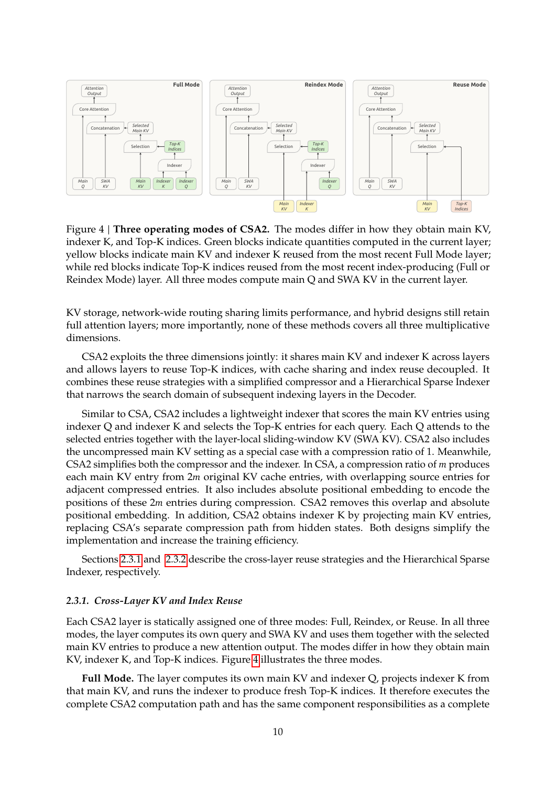

阅读地图
先把推荐流读成一段研究问题，而不是二十二个标题
东锡 NLP 的这组帖子覆盖 2026 年 9 月至 11 月。它们不像一份预先安排好的课程表：有新论文推荐，有同一主题的连续解释，也有对新产品或研究标签的批评。要读懂这份推荐流，先要知道每组材料在回答什么问题，再判断哪些观点彼此支持、哪些仍有张力。
九月：模型读入历史，怎样比生成长答案更高效
窗口开头，他连续解释 DeepSeek 的 Causal Encoder–Decoder、global KV 与局部重放。这些帖子的动机很具体：Agent 的输入越来越长，重复读文档和工具输出的成本越来越重要。随后 Jev 引出“不必每次都聊天”的判断模型：理解输入后直接输出选项分布，而不是生成几段文字才能完成一次分类。把这两条线放在一起，读者看到的不是“某种旧架构回归”，而是模型怎样根据工作负载重新安排计算。
与此同时，Story Imprinting 进入推荐。他两次强调这篇工作，因为训练文本中的人类角色即使不是助手，行为也可能迁移到普通助手对话。它把“训练数据教了什么”的问题，从显式指令扩展到故事里隐含的角色关系。JEPA-Anything 与它同列 Week 38 最佳，研究的是另一个层面：怎样用可分解的预测表征处理不同领域的变化，而不把所有能力都压到下一词生成。
十月：如果模型参与自己的改进，哪一步会成为瓶颈
十月前段出现智能爆炸、递归自我改进与 Agent 经济学材料。它们并不提出同一个训练算法：一篇讨论未来完全自动化的反馈情景，一篇用弹性校准当前是否自我维持加速，一篇讨论有限实验资源、数据、信用与验证怎样分配。随后 AutoEnvScaling、TreeOPSD 与 Hybrid Reasoning Agents 给出更具体的研究对象：训练环境由谁写，终局奖励怎样分配到长轨迹，思考是否只能通过可见 token 展开。
同月的 ExploreNet、RePR 和 Vela，又把目光转到训练信号。ExploreNet 不只增加候选图像，而学习哪类噪声更能产生有用的比较；RePR 让生成预测教 encoder 保留生成需要的信息；Vela 用真实未来用户行为锚定部分监督，再严格区分可见历史、隐藏答案和评分教师。这些方法的输入、输出和证明对象不同，后面的讲解会分别展开。
他也推荐模型训练组织、代码审查和决策评测文章，并开始自己的后训练教学系列。组织文章谈实验信号如何汇总；代码审查谈怎样限制无效互审又保留责任；决策评测谈概率分数怎样转成业务阈值。它们属于论文之外的工程实践，却解释了为什么一种局部技术提升不一定兑现成更好的整体工作流。
十一月：对“更高分”的解释要求变得更尖锐
十一月他强推 MoE 训练手册与 Drex 配方，也在 Weight-Space Programming 的讨论中追问：修掉推理循环后多个 benchmark 上升，是创造新能力，还是恢复被故障遮住的已有能力？他同时回到 Persona Vectors，并推荐机制可解释性综述。于是推荐流的另一条问题渐渐明确：可见行为由哪些内部状态与数据变化支撑，我们怎样用对照而非研究标签来解释它。
这份笔记先逐组重建论文和文章本身。每个关键公式会解释符号及计算作用，重要数字会说明任务、指标、分母和比较条件；作者的解释与本文的判断另作区分。完整材料索引及实际阅读范围放在末尾。读者可以从下列主线进入，也可以按目录直接跳到某篇。
长输入为什么越来越贵：先理解 KV，再理解 CED 与 MoE
这两个月的讨论从一个很实际的问题开始：Agent 不断读取代码、文档和工具输出，为什么等第一句话的时间仍然很长？语言模型有两个不同阶段。Prefill 是处理已经给出的输入，生成回答之前要完成；decode 是逐步产生后续 token。一次工具调用回来，会增加输入；如果前缀已变，或旧缓存未命中，模型需要重新处理大量文字。降低生成一个 token 的成本，并不等于消除了读取长输入的成本。
1. 一个可以跟算的 attention 例子
Attention 可以理解为按当前问题挑选并合并记忆。当前位置生成查询向量 Q；历史位置提供用于匹配的 K，以及被读取的内容 V。先用 Q 与每个 K 的点积得到分数，除以维度的平方根控制尺度，再用 softmax 变成和为一的权重，最后对 V 加权。以下是用于理解的两条记忆例子，不是论文实验。
\[q=(1,0),\quad k_1=(\sqrt 2,0),\quad k_2=(0,\sqrt 2),\quad v_1=(10,0),\quad v_2=(0,10),\quad d_k=2.\]
两条匹配分数分别是 \(qk_1^\top/\sqrt{d_k}=1\) 和 \(qk_2^\top/\sqrt{d_k}=0\)。softmax 后，第一个权重为 \(e/(e+1)\approx0.731\)，第二个为 \(1/(e+1)\approx0.269\)。因此读出的内容是：
\[o=0.731(10,0)+0.269(0,10)=(7.31,2.69).\]
这里最重要的区别是：K 决定“读多少”，V 决定“读到什么”。模型通常不会重新计算全部历史位置的 K、V，而把它们保存为 KV cache 。Cache 不是原始文本；它是某个模型、某个上下文和某个运行状态下已经计算出来的表示。Prefix caching 再进一步复用相同输入前缀。若文档从中间改了，变化之后的状态一般也要更新，不能把整份旧 cache 当成仍然有效。
2. CED 的改变不只是“压缩记忆”
DeepSeek-V4.1-Flash 的 Causal Encoder–Decoder，把 40 层语言骨干分为 20 层 causal encoder 和 20 层 decoder。“Causal”表示每个位置只读先前内容；它不是 BERT 那种能同时看未来 token 的双向 encoder。一般 Transformer 的每层，都从进入本层的 hidden state 生成本层 K、V。CED 改变了 decoder 的全局 KV 从哪里来 ：由 encoder 的最后一层表示直接投影，而不要求每个输入位置先完整走过所有 decoder 层。
\[C_l=H_{L/2}W_l^{KV},\qquad Z_l=H_{L/2}W_l^Z,\qquad l\gt L/2.\]
\(H_{L/2}\) 是 encoder 最后输出，\(C_l\) 是第 l 层需要的 KV 条目，\(Z_l\) 是压缩权重，W 是训练得到的投影矩阵。这样，十万 token 的 prompt 主要走前半层，就可以为后半层的 global attention 准备历史记忆。但 decoder 仍要有自己的短程局部状态：论文保留 sliding-window attention，简称 SWA，每个位置只关注近邻窗口。这种局部 K、V 仍来自各层自己的 hidden state，不能由上述一次投影全部替代。
因此实际流程是：encoder 处理完整 prompt；得到 decoder 的 global KV；再让 prompt 尾部的一小段经过 decoder，重建开始生成所需的 local KV；最后开始 decode。这个尾部重放被称为 SWA Bounded Replay 。它把重放范围限制在最近窗口，而非递归展开所有层的理论感受野。
3. 为什么“几乎省一半”有输入长度条件
用论文的复杂度近似做一个算例。设 prompt 长度 N、总层数 L、重放窗口 \(n_w\)，忽略不同层的实际常数和 kernel 差异。完整前向的工作量近似 NL；CED 是 \(NL/2+n_wL/2\)。令 N=100,000、L=40、\(n_w=128\)，可以逐步算出：
\[\begin{aligned}C_{\rm full}&=100000\times40=4{,}000{,}000,\\ C_{\rm CED}&=100000\times20+128\times20=2{,}002{,}560,\\ C_{\rm CED}/C_{\rm full}&\approx0.50064.\end{aligned}\]
但若 N 只有 256，比例变成 \((256+128)/(2\times256)=0.75\)。这说明收益依赖“长输入远大于窗口”，不意味着任何一次 API 请求都快两倍。上述是复杂度单位算例，不是墙钟测速。真实延迟还取决于缓存命中、通信、批处理、硬件利用率及长上下文注意力开销。
Bounded Replay 还接受了一个重要代价：恢复的 local KV 与完整历史计算不完全相同。论文在后训练中模拟同类重放，帮助模型适应；实际测评中损失很小，但对极端输入和 cache 续接边界的保证仍有限。因此它更像一个有经验依据的近似状态恢复策略，而不是数学等价的 memoization。
4. CSA2 把“共享内容”和“共享选择”拆开
Compressed Sparse Attention 2，简称 CSA2，同时减少每条缓存的大小、需要保存的位置数和重复保存的层数。每个 query 只读取由索引器选出的部分 global KV，另加本层 local SWA。三种层的责任不同：Full 层重新生成 global KV 与索引；Reindex 层沿用前层的 global KV，却用自己的 query 重新选位置；Reuse 层连前层的 Top-K 位置也沿用。共享 KV 省存储，复用位置选择省索引计算 ，不是同一个效果。

原论文图 4。三种模式都保留本层的 query 与局部 SWA KV；区别在 global KV 和稀疏位置选择是否重新计算。 FP4 再把 main KV 的精度压到四比特。论文报告 global KV 约 890 bytes/token，约是上一代 V4-Flash 的四分之一；persistent cache 通过不持续保存全部局部状态，再减到约八分之一。百万 token 乘 890 bytes 约为 0.89 GB，但这只是该 global KV 口径，不包含总模型权重、激活、临时工作区与其他缓存。骨干 552B 与额外 Engram 参数、prefill 激活 8B 与 decode 激活 16B，也分别是总容量与每 token 参与计算的量。
5. MoE 解决的是容量—计算取舍，不是把所有层变免费
Mixture-of-Experts，即 MoE，把某些前馈层替换为多组专家网络。一个 router 根据 token 表示给专家打分，每个 token 只激活少量专家。所有专家可以储存不同模式，但每次不执行全部专家。于是模型可以有更大的总容量，而每个 token 的算力较小。还需存储所有专家，跨设备发送 token 会产生 all-to-all 通信；如果大量 token 都选一个专家，其他设备可能空等。
以三个专家的 logits \((0,1,2)\) 为例，softmax 概率约为 \((0.090,0.245,0.665)\)。若只选后两个专家，按存活专家重新归一化，权重变为 \((0.269,0.731)\)。改 top-k 不只是少计算一个专家，还改变输出混合尺度。MoE 手册因此专门比较不同归一化办法，而不是只给一个“专家越少越快”的结论。
辅助负载平衡损失常写成 \(\alpha E\sum_e f_eP_e\)：E 是专家数，\(f_e\) 是实际分配给专家的 token 份额，\(P_e\) 是该专家平均路由概率。它通过梯度鼓励负载分散，但会与语言建模目标竞争。Loss-free bias 则在选择时给冷门专家加偏置、给热门专家减偏置，输出合并仍用原分数；“不增加辅助梯度”不意味着没有改变路由或没有调参。手册还讨论 router 的 fp32 精度：两个很接近的分数被 bf16 舍入为并列，可能改变谁被选中，z-loss 控制尺度也未必解决这个问题。
系统部分的 8 H100 示例中，暴露的 all-to-all 约占半个 step，里面既可能有网络成本，也可能有等待热点专家的成本。强制均衡的诊断 run 快约 40%，并不证明训练质量保持；另一个通信重叠实验最高提升约 35%吞吐，却增加保留显存。每项数字回答的问题不同，不能把两种提升直接相乘成生产保证。
独立分析：该优化哪里的代价
这组工作的实质是按 Agent 的输入/输出比例重排计算，而不只是增加规模。若应用反复读取大文档，CED 与缓存策略可能直接触及瓶颈；若主要生成很长回答、输入很短，最该优化的环节未必相同。MoE 的算力稀疏性只有在专家负载与通信跟得上时才能兑现。对同一模型、同一任务，应同时记录首 token 等待、后续 token 间隔、峰值内存、缓存续接质量和最终成功率。这样才区分“计算结构省了”和“实际交付更快更好”。
“不聊天”的模型怎样做决策：Jev、Drex 与训练配方
一个客服 Agent 读完长工单后，可能只需要回答：“转账务组、技术组，还是人工升级？”如果用聊天模型生成一段解释，再从文字中解析选项，很多计算用于完成用户并不需要的文本。东锡在 9 月连续讨论 Jev，重点正是这个区别：模型接收一个状态和一组任务/选项，直接输出结构化分数或概率；它不是通用对话机器人的另一个名字。
这类任务仍有泛化要求。今天选工单部门，明天给搜索结果排序，后天按新的 rubric 判断是否出错；输入长度、候选数、选项含义都可以变化。因此“像 BERT 做分类”只说明输出形态接近分类，不能代替对具体 attention、readout 和训练方法的解释。Drex 与 Base Labs 报告恰好给出了这些细节。
1. 从概率向量到可变选项：为什么不是固定标签分类器
设一个问题有 K 个选项，模型输出 \(p=(p_1,\ldots,p_K)\)，各项非负、总和为一。它可以返回最大概率选项，也可以返回整组分布。若是一组有序等级，例如“情绪强度 0—4”，还可以算期望等级 \(\sum_j j p_j\)。最大概率看起来像“置信度”，但“分布有合法格式”和“概率与真实正确率吻合”是两件事。后者叫校准 ，稍后要独立评估。
Drex pointer 版本把状态 S 和每个问题的 instruction、选项、decide 标记编码为序列。选项末尾的隐藏表示生成 key，decide 位置生成 query，两者比较得到每个选项 logit：
\[q=W_qh_{\rm decide},\qquad k_j=W_kh_{{\rm option},j},\qquad z_j=\frac{q^\top k_j}{\sqrt{d_p}},\qquad p_j=\frac{\exp(z_j/T)}{\sum_i\exp(z_i/T)}.\]
\(d_p\) 是 pointer 的比较维度，T 是温度。选项不是一个固定词表标签，它由本次输入的文字表示决定。问题分支彼此不读，或在 hybrid backbone 上逐题编码并共享状态缓存，所以多题复用同一长状态可以更便宜。它还让某题的答案不因同时问了另一个问题而改变，至少在其结构与浮点误差条件下如此。
Drex Max 则改用另一条路线：27B backbone 在 full-attention 层去掉因果掩码，使整题在这些层可双向读；DeltaNet 的递推层仍保持左到右。答案位置用一个 readout head 输出最多 255 个选项代码的 logits。它可以综合比较各选项，却需要学会把 A、B、C 等代码绑定到选项内容。其双向层让state表示依赖本题，Max每题重新编码图片和state，不能沿用pointer的跨问题共享长state缓存；一次处理长文档多题的成本优势须区分两条架构。置换选项后，这种绑定会变，因此顺序鲁棒性需靠训练和实验检验，不是换一个 head 后自动获得。
2. 为什么 SFT 标签会把不确定答案推向过度自信
传统监督微调把某个 gold 答案写成 one-hot，例如 \(y=(1,0)\)，交叉熵 \(-\log p_1\) 持续鼓励第一个概率向一靠近。但有些业务判断确实不确定，或多个答案都合理。假如可信目标分布是 \(q=(0.6,0.4)\)，就不应把一次抽出的“第一个正确”误当成确定性事实。
以自拟二选项例子跟算：模型目前 \(p=(0.8,0.2)\)。对 soft target q，交叉熵是 \(-0.6\log0.8-0.4\log0.2\approx0.778\)；若模型匹配 q，损失变成 \(-0.6\log0.6-0.4\log0.4\approx0.673\)。两者差约 0.105，就是 \(\mathrm{KL}(q\|p)\)。在 softmax-logit 空间，第一项的梯度为 \(p_1-q_1=0.2\)，优化会把过高的 0.8 拉回；而 one-hot 目标给 \(p_1-1=-0.2\)，反而继续推高。这说明真实不确定性怎样进入损失 会改变训练方向。例子用于理解，不是论文测试结果。
Drex pointer 的 RLAF，reinforcement learning from adjusted feedback，先由教师提出分布，再用核验结果调整成 \(\tilde q\)。它对 \(\tilde q\) 使用 log scoring、spherical scoring 和有序等级的 Cramér 距离，都是使诚实分布最优的 proper scoring 形式。主实现直接对确定性的 soft-target loss 求导；“reinforcement”主要体现在反馈目标构造，不应把它写成另一个长轨迹 GRPO。
3. Max 的 RLAF 不一样：核验答案、judge 和参考模型同时起作用
Drex Max 把 gold 与 judge 的意见放到 reward，再约束策略不要离 SFT checkpoint 太远。judge 是同一 base model 的生成式版本，可以展开推理，但不被假定比决策器更准确。其核心形式是：
\[\begin{aligned}r(a)&=\rho\mathbf 1[a=y^*]+\eta\log q_J(a),\\ J(\theta)&=\mathbb E_x\!\left[\sum_a\pi_\theta(a\mid x)r(a)-\beta\mathrm{KL}(\pi_\theta(\cdot\mid x)\|\pi_0(\cdot\mid x))\right]-\text{一致性项}.\end{aligned}\]
\(y^*\) 是核验答案，\(q_J\) 是 judge 分布，\(\rho\) 和 \(\eta\) 决定两种反馈的权重，\(\pi_0\) 是冻结的 SFT 参考模型，\(\beta\) 决定偏离参考的代价。参考项不是保证正确，而是防止一次有偏反馈把概率任意拉走。
这个目标也揭示一个反直觉边界。假设核验答案是 A，但 judge 几乎认定 B，给 \(q_J(A)=0.001\)、\(q_J(B)=0.999\)。用报告的 \(\rho=0.2,\eta=0.05\) 代入，自拟情景中两答案 reward 差为：
\[r(A)-r(B)=0.2+0.05\log\frac{0.001}{0.999}\approx-0.145.\]
judge 的极端反对可以压过 gold 的加分。作者自己讨论了这种可能，但未测它在训练中出现的频率。因此“有 verified feedback”不是逻辑上保证最终分布把 gold 放第一。提高 gold 权重或平滑 judge 分布会改变这个问题；是否值得改，还须比较校准、正确率与真正模糊题表现。
补一个单题推导：KL 为什么只是软约束，而不是纠错器
暂时忽略一致性项，把一题的选项分布当作可自由选择的变量，目标是奖励减参考KL，且所有概率和为一。下面是解释目标函数的推导，不是把共享参数语言模型的训练简化成逐题直接设置概率。对归一化约束加拉格朗日乘子 \(\lambda\)，第 a 个概率的导数为：
\[\begin{aligned}\mathcal J(p)&=\sum_a p_ar_a-\beta\sum_a p_a\log\frac{p_a}{p_{0,a}}+\lambda\Bigl(\sum_a p_a-1\Bigr),\\\frac{\partial\mathcal J}{\partial p_a}&=r_a-\beta\left(\log\frac{p_a}{p_{0,a}}+1\right)+\lambda.\end{aligned}\]
令导数为零，可得 \(\log(p_a/p_{0,a})=r_a/\beta+\lambda/\beta-1\)。最后两项对所有选项相同，归一化后抵消，因此：
\[p_a^*=\frac{p_{0,a}\exp(r_a/\beta)}{\sum_b p_{0,b}\exp(r_b/\beta)}.\]
用一组自拟数字跟算：参考分布 A/B 各 0.5，gold 是 A，judge 给 A/B 为0.7/0.3，取 \(\rho=0.2,\eta=0.05,\beta=0.1\)。则 \(r_A=0.2+0.05\log0.7\approx0.1822\)，\(r_B=0.05\log0.3\approx-0.0602\)；新赔率为 \(\exp((0.1822+0.0602)/0.1)\approx11.29\)，最优 A 概率约 \(11.29/(1+11.29)=0.919\)。增大 \(\beta\) 会让它更接近参考0.5，降低 \(\beta\) 会更确信奖励偏爱的选项；如果奖励本身因judge错误而偏爱B，同一个公式仍会把B推高。它解释了为什么“参考约束”和“核验反馈”各有作用，不能把KL视作自动纠正评价错误的工具。
4. 实验要回答三个不同问题
第一是答得准不准 。Decision Bench v4 有 1,071 个决策，949 文本、62 图文、60 纯图。Max 用 image encoder 达 94.0%，95% Wilson 区间为 92.4—95.3%；中位端到端时间 0.66 秒。若只给图像的文字描述/OCR，整体 92.1%，纯图 63.3%；用真实图像后纯图 98.3%。这项跃升主要回答“视觉信息是否被有效读取”，不是 RLAF 单独提高 35 点。
第二是概率准不准 。在约 115k 个留出决策上，Max accuracy 87.9%，部署温度（Max的T=1.009）下的 ECE 3.61%；温度在另一半数据拟合后，ECE 降到 1.35%，argmax 准确率不变。ECE 把预测分桶，比较每桶平均置信度与正确率；它会受桶数与样本量影响。NLL 和 Brier 则直接评价给真答案的概率。更小的 v2.0 在各自部署温度下 ECE 1.37%，比 Max 更校准，说明最大或最准模型不必给最好概率。
第三是顺序变了是否还同样回答 。表 7 同 backbone、数据与调度，SFT-only 的 Decision Index 64.9、accuracy 86.5%、ECE 4.4%；加入 RLAF 后为 66.9、88.0%、3.5%。去掉选项与 state 一致性项，平均正确率相近，随机置换的 flip rate 却由 4.2% 升到 6.3%。所以一种约束可以对均分影响小，却对部署稳定性有意义。
5. Base Labs 报告：数据纠错与拒判，而不是另一种 RLAF
Mammoth-1 与 Elephant-1 以 27B 和 9B 模型做相似的选项概率输出。它们在 full-attention 层采用 block-bidirectional mask，仍保留 Gated DeltaNet 因果层；冻结视觉 encoder，全参数训练一 epoch。配方是交叉熵加 Brier：
\[\mathcal L=-\sum_i y_i\log p_i+\lambda\sum_i(p_i-y_i)^2,\qquad\lambda=1.\]
最终 6.21M 例子来自公开任务、合成决策技能、安全/拒判、评分与专家领域。合成数据来源先独立重判、检查歧义、去除 benchmark 重合、检查“仅看选项就能猜答案”的捷径，再用短训练确认来源有帮助；公开数据保留原标签，在最后阶段并入，不是所有公开标注也被这一pipeline重判。八轮数据 mix 的意义是把失败变成新数据需求：模型明明缺知识却总选一个答案，就生成正确选项被移除、应回答“不知道”的训练情景。
报告中扩量把公有评测从约 45.5 拉到 66.0，后续数据修补再到 73.9；但早期 mix 同时改了 attention mask，顺序迭代不能当作干净单变量 scaling 实验。Mammoth 在当时 Jev Decision Index full board 为 71.24，公有 mix 曲线、私有 full score 与作者复测 Artificial Analysis 的分数是不同对象，不能连成同一条“越训越高”的曲线。
独立分析：这条路线真正值得做什么
决策器的优势在于把可变任务的判断压到一次高效读入和结构化输出；它没有证明一次前向能够替代任意长推理。Drex 在难闭卷知识上仍落后前沿生成式模型，Base Labs 文本训练也不代表多模态完整验证。实际部署应把答题准确率、概率校准、选项置换、拒判代价和总时延分开验收。否则输出一个漂亮的百分数，只是把不确定性包装得更精确。
拿到 0.8 的分数之后，怎样决定行动：Hamel 的评测方法
Hamel Husain 与 Antaripa Saha 的文章从 100 条公寓租赁 Agent trace 出发：判断是否有未完成预订、未转交人工等失败。Trace 是完整对话与动作记录，而非只看最后一句回答。人类复核给出失败标签，决策器返回 0—1 分数。这是一个分类器评估问题，不是比较谁的解释更像人。
1. 默认 0.5 可以把好排序变成坏分类
下面是自拟的极简反例：10 条失败 trace 都得到 0.4，10 条正常都得到 0.1。阈值 0.5 时，没有一条被报警；召回率为零，告警 precision 因没有告警而没有通常意义上的定义。改到 0.3，20 条全部分对。排序完全一样，模型一次都没有重跑，只是把行动阈值换成适合任务的值。
Precision 是告警里真正失败的比例，recall 是所有真实失败里被抓出的比例。F1 用调和平均折中：
\[P=\frac{TP}{TP+FP},\qquad R=\frac{TP}{TP+FN},\qquad F_1=\frac{2PR}{P+R}.\]
TP 为抓对的失败、FP 为误报、FN 为漏掉的失败。若漏一次失败很昂贵，业务目标不必最大化 F1，可以最小化 \(c_{FP}FP+c_{FN}FN\)，或先规定最低 recall。论文式高均分不是业务决策的完整目标。
2. 为什么不能在同一百条上挑阈值，再宣布成功
如果看着全部标签挑阈值，测到的是对这批样本的适配，而不是下一批的表现。文章用分层五折：每次在四折训练precision与recall均至少80%的可行阈值中最大化F1，在剩下一折报告P/R/F1；严格流程若某折无可行阈值，应明确报告不可行，不默默放松。文章为演示还对非候选模型做过无约束F1调优，须与硬门槛流程区分；分层保持失败与正常的比例。阈值训练时满足 precision/recall 下限，留出折仍可能跌破，所以应同时报告约束是否真正保持。小样本上的几个错误就可能明显改变结论。
调阈值需要保存既有分数，不一定要再调用 API。文章报告 Perplexity 的 F1 0.79、每 100 次评测约 0.82 美分，OpenAI Decisions 0.87、3.72 美分。它们描述这个 trace 集、提示和当时价格的质量—成本取舍；研究没有测 latency。对经常要等工具返回的 Agent，成本更低也不直接证明更快。
3. 排序、阈值与概率校准是三种能力
分数只要把失败排在正常前，就能找到好阈值；但把 0.8 解释成“80%失败概率”要求更强。若所有得到约 0.8 的记录中真正失败只有 30%，就过度自信。文章用 reliability plot 检查同分组的实际失败率，并尝试 Platt scaling：在训练折上给原分数的 log-odds 拟合一个线性变换，再映射回概率。Brier 是 \(\frac1n\sum_i(p_i-y_i)^2\)，评价概率与标签的平方误差。
校准不是必做且必有效：有些模型原本较校准，另一些在这批数据上差很多，OpenAI 的校准后甚至略差。对于每个业务失败类型，先有明确人类标签和判定标准，再比较大/小模型、阈值与校准，才是文章完整的顺序。
独立分析
这一篇把“新决策模型”还原成普通但容易忽视的统计工作。最好的研究连接是：训练目标塑造概率，数据分布决定校准，业务代价决定阈值；三个环节都可以变化。百条单领域 trace 足以演示方法，但下一批租户、任务或模型版本改变后仍要重新抽样复核。只读一个 probability API 的介绍而跳过这些步骤，会把输出格式误当成可靠性。
You Only Edit Once：一次换例子，为什么比“最相似”更有用
Few-shot prompting 把几个示范放到问题前，帮助模型知道该做哪类任务。Semantic TopK 通常用 embedding 相似度挑示范，但“讲同一个地点”不等于“展示同一种答案”。论文用一个示意说明：问题问 Denver 到 Aspen 多远，按主题可能检索到“在哪个州”“谁建立某城”的例子；模型需要的却是“距离问题应输出数字”的结构。
Jev-LDE 是一个 1.7B 编辑器。先检索初始示范集和替换候选，它只做一次成员操作：Keep、Delete 或 Replace。然后冻结的目标 LLM 用新示范回答一次。操作改的是上下文，不是模型权重，也不是重写整个 instruction。
训练时可以花较多预算探索多个编辑，用目标模型答对与否作为二元 reward，采用 group-based RLVR 优化编辑器；推理时则只做一次编辑和一次目标回答。训练前先从语义top16候选池构造状态，初始示范用top-k，替换从其余成员选；探测Keep、最多两个合法Delete和五个Replace，冻结目标反馈同时有0和1才留入训练。全部同奖的状态缺少组内相对信号，因此不是把所有检索请求无差别送进RL，也没有预先给定唯一最优动作标签。这个区别解释了“快速”的来源：把搜索费用摊到训练，而非没有搜索/训练成本。反馈目标仅是 Llama-3-8B-Instruct，编辑器在 AGNews、TREC、DBPedia 与 GSM8K 上训练，再换目标模型和分类任务测试。
48 个低 shot 分类配置里，46 个相对 Semantic TopK 更好，44 个最佳或并列；平均 1-shot 81.2%→88.1%。图 7 TREC 的 trained editor 65.6%，Keep 52.8%，随机编辑 23.2%、未训 1.7B 31.2%；因此有用的是学会哪一次编辑 ，而不是“一次改动总有益”。另一方面，Qwen2.5-7B 的 TREC 从 65.4% 到 80.6%，评测端到端时间增加 11%。它不是对不编辑的零开销加速。
独立分析
这篇在原帖中是标题分享，态度不应升级成“最强推荐”。方法在分类明显有效，数学 GSM8K 小且不稳定，AQuA-RAT 平均下降；候选池外的好例子、需要多个协同改动的任务都不在单次编辑能力内。它给 System-1 一个具体可测功能，但不证明通用 prompt 优化已经被一个小模型解决。
TreeOPSD：一轮搜索的结果，怎样教会下一轮决策？
Heming Zou等，Tree-Aware Posterior Distillation for Long-Horizon Agentic Reinforcement Learning ，v1，2026年10月16日。
从终局对错到每个交互回合
一个检索智能体先提出查询，读到文档，再查第二个线索，最后回答。若它答错，原因可能是最后算错，也可能是第一条查询就走错方向。传统Group Relative Policy Optimization（GRPO）为同一道题采多条完整轨迹，按终局奖励与组内平均的差异分配优势，却把同一优势广播给整条轨迹：失败里的好查询也受罚，成功里的无用步骤也获奖。本文希望只用可验证的终局结果，就得到更细的回合信用；同时处理另一问题——同批轨迹分几次更新后，当前策略已经偏离生成这些轨迹的旧策略，固定优势还在沿原方向推动。
论文的turn不是一个词，而是一次智能体决策生成的完整片段：非终止回合包括思考和工具调用，之后工具返回观察；终止回合生成答案。历史包含题目、此前行动与观察。训练仅对智能体生成的词计算梯度，检索返回的文字是条件，不是模型要模仿的输出（§2.1，pp.2–3）。这一区分使“读到了正确文档”和“选择了正确查询”在数据流中处于不同位置。
共享前缀：保持前面的选择不变，再尝试后面的选择
冻结采样策略后，先生成\(M\)条完整轨迹，在每条轨迹的\(N\)个随机非终止回合结束处另采一段到终局的后续。相同题目与前面相同的行动、观察构成shared prefix；合并它们形成树，每个turn是节点，另采的后续才是分支。终局共有\(K=M(N+1)\)个叶子，但生成开销不等于\(K\)条从头跑的轨迹：分支通常只重做后半段。默认\(M=4,N=2\)，按期望生成成本与GRPO的8条完整轨迹匹配（§2.2）。
先把叶子奖励减去本题平均、除以样本标准差；全部结果相同则优势设为零。再用冻结策略对各子回合的似然作归一化权重，把叶优势向上加权平均，得到节点信用\(V_i\)。因此，一个较早回合的信用综合了从该历史继续的多种结果，而非被某一条后续绑架。共享回合只进入损失一次，避免它有多少后代就被重复训练多少次。这里的信用是有限采样下的估计，不是有标签的“这一步绝对正确”（§2.3，Eq.4–6）。
两点后验不是答对概率：它比较当前策略与行为基线
对已采到的完整回合，计算每词平均的对数似然比\(s_i\)。平均而非直接相乘，是为了抑制长回合把概率比指数放大的问题。令\(r_i=e^{s_i}\)，在“当前策略相对强度\(r_i\)”与“旧策略基线1”这两个量之间归一化，得到学生Bernoulli两点分布的参数\(p_i\)。它不是词表分布，不是两个候选答案，更不是该回合成功的概率。当前策略与旧策略相同时，\(p_i=1/2\)；回合更受当前策略偏爱时，\(p_i\)增大（§3.1，Eq.8–9）。
\[s_i=\frac1{L_i}\sum_{j=1}^{L_i}\log\frac{\pi_\theta(a_{i,j}\mid h_{i,j})}{\pi_{\mathrm{old}}(a_{i,j}\mid h_{i,j})},\qquad p_i=\frac{e^{s_i}}{1+e^{s_i}},\qquad q_i=\frac12+\frac{V_i}{\tau}.\]
教师也不是更强LLM，而是由信用构造并冻结的\(\operatorname{Ber}(q_i)\)。从行为基线出发的KL约束局部改进问题，给出上述线性\(q_i\)；\(\tau\)按组大小与半径\(\rho\)校准，确保\(0\lt q_i\lt1\)且目标有界。线性映射的意义是：先回传信用再变成教师，等于先构造子教师再取加权平均。非线性sigmoid教师一般没有这个性质（§3.2，Eq.10–12；图3）。
训练最小化教师到学生的Forward KL，各回合按词数归一化。每次小批更新重算学生\(p_i\)，但同一树的教师\(q_i\)不变。对应的上升权重为\(\Gamma_i=\tau(q_i-p_i)\)：起点恢复树策略梯度，到目标停止，越过目标后反向。这是“有限目标”与“固定正优势一直推”的具体差别，而非单纯把更新裁小（§3.3，Eq.13、16–17）。
自拟跟算例：看见梯度怎样停止与反向 为展示Eq.17，取\(V=0.1,\tau=1\)，则\(q=0.6\)。这不是论文默认超参数。\(p=0.5\)时\(\Gamma=0.1\)；到\(p=0.55\)时只剩0.05；到\(p=0.6\)时为0；若其他小批更新把它推到\(p=0.7\)，\(\Gamma=-0.1\)，转为降低该回合似然。目标比率是\(r^*=q/(1-q)=1.5\)，目标分数\(s^*=\log1.5\approx0.4055\)。固定信用则在这四个位置始终为0.1。
补一步求导：有限目标的更新怎样从KL里出现
固定教师参数q，把一回合的损失写成两点分布的KL。教师熵不随学生变化，真正影响学生的是交叉熵：
\[\mathcal L(s)=q\log\frac q{\sigma(s)}+(1-q)\log\frac{1-q}{1-\sigma(s)}.\]
设 \(p=\sigma(s)\)，有 \(\mathrm dp/\mathrm ds=p(1-p)\)。先对p求导，再乘这个导数：
\[\begin{aligned}\frac{\partial\mathcal L}{\partial p}&=-\frac qp+\frac{1-q}{1-p},\\\frac{\partial\mathcal L}{\partial s}&=\left(-\frac qp+\frac{1-q}{1-p}\right)p(1-p)=p-q.\end{aligned}\]
若损失外乘 \(\tau\)，下降方向的上升权重就是 \(\tau(q-p)\)。起点新旧策略相同，s=0、p=1/2；代入 \(q=1/2+V/\tau\)，得到 \(\tau(q-p)=V\)，正好恢复原来的信用方向。后来p接近q，更新变小；超过q则符号反转。这一推导解释的是固定树上局部目标，不意味着每次共享参数更新只改变一个回合，或保证最终真实任务分数单调提高。
线性教师合法还依赖组大小。K个叶奖励用样本标准差归一化时，\(|A_k|\le(K-1)/\sqrt K\)；树上凸加权回传保持这个界。论文取\(\tau=(K-1)/(\rho\sqrt K)\)，其中\(0\lt\rho\lt1/2\)，于是\(q_i\in[1/2-\rho,1/2+\rho]\)。默认K=12、\(\rho=0.25\)时\(\tau\approx12.70\)，不是教学例的1；全叶同奖则V设零。这个依赖说明换叶子数时不能任意保留同一温度。
推理时使用训练后的策略按普通ReAct流程生成思考、调用检索工具并回答；上述树分支与冻结教师是训练数据和优化过程的组织方式，不是每道测试题都要再构造教师或做参数更新。
这里“按词数”不是让每个回合等权。设\(L_i\)是第i个回合生成的词数，\(L_x=\sum_{i\in T_x}L_i\)是本题树中唯一actor token总数，工具观察不计入，共享前缀只计一次。论文式13的总损失是：
\[\mathcal L_x(\theta)=\frac{\tau}{L_x}\sum_{i\in T_x}L_i\,\mathrm{KL}\!\left(\operatorname{Ber}(q_i)\|\operatorname{Ber}(p_i)\right).\]
前面s使用回合内平均log概率，单个词对s的导数含\(1/L_i\)；损失外乘\(L_i\)后抵消，因此同回合每个actor token的梯度权重为\(\tau(p_i-q_i)/L_x\)。这样长度改变不会把回合权重误设为相同：长回合含更多词，却仍在整棵树的token总量下归一化。若省掉\(L_i\)，每个词会多一个\(1/L_i\)因素，更新就变成另一种长度加权算法。
实验要回答：收益来自分支，还是来自有限目标？
输入是多跳问答或需要多轮检索的研究问题，输出是短答案；工具仅提供中间证据。前者在HotpotQA训练，后者用OpenResearcher的6102个独立问题训练，不把已发布教师答案放进输入。测试指标EM是提取答案与参考答案完全一致的比例，四数据集Avg为等权平均，不是按题数加权。多跳训练奖励使用阈值化token F1，深研究训练奖励另有0.1格式奖励，表1的EM不含该奖励（附录E.1）。
表1（p.9）30B-A3B的深研究平均：GRPO 16.23、同树固定信用TreePO 17.59、TreeOPSD 21.20；相对GRPO增加4.97个百分点。多跳平均44.80到45.93，收益较小，且2Wiki上50.88低于GRPO的52.13。4B深研究12.18到15.45，同树TreePO为13.07。最关键对照是TreePO：树、回传信用和四个更新块都相同，差别才主要落到有限目标与固定信用。
表2（p.11）4B同预期预算下，平树\((8,0)\)深研究11.28，适度分支\((4,2)\)15.45，偏重分支\((2,6)\)14.97，说明也需要覆盖不同起始轨迹。半径0.10、0.25、0.40对应14.62、15.45、14.69；图5进一步比较pointwise信用与组内再中心化信用、线性教师与非线性教师。附录D.4五训练种子中4B深研究为15.45±0.39，GRPO为12.18±0.27。作者结论是：树提供回合信号，后验目标让同批的后续更新具有停止与纠偏机制，较长任务受益更多。
独立分析：目标有终点，不等于真实任务能力有保证
我认为最有价值的不是“无外部教师”，而是把信用估计与信用兑现分开：前者靠分支探索，后者靠学生和冻结目标的差距。TreePO对照支持第二部分确有贡献。但定理条件是已采到的树和局部代理目标，终局错判、没有探索到的新动作、不同回合共享参数造成的干扰仍会影响真实表现。等预期rollout开销也不是所有场景下的等墙钟成本；有副作用的环境能否从共享历史恢复，是移植到终端任务的必要条件。
附录E.3报告训练窗口内选一个checkpoint；小规模GAIA与xbench每多答对一题都会影响等权平均。持续学习方面，当前任务上的有界漂移并不控制旧任务遗忘，附录C.4把旧树重放列为后续方向。与AutoEnvScaling相比，本篇固定任务供应而改变每批如何学习；二者可互补，但新的课程会改变采样树和信用尺度，组合效果应以同环境、同更新块、同工具预算的对照判断。
AutoEnvScaling：让智能体给自己建一间合适的练习室
Simon Yu等，AutoEnvScaling: Automating the Data Flywheel with Terminal Agents ，v1，2026年10月9日。
为何训练环境会先于模型成为瓶颈？
终端智能体通过执行命令、读取输出、修改文件完成工作。用强化学习训练它，需要的不只是题目文字，还要有真实可操作的初始状态和判断完成与否的测试。模型学会已有任务后，旧环境很容易全部通过，继续采样难以得到有区分的训练信号；研究者又得分析失败、写新容器和测试。AutoEnvScaling把这一整段环境设计工作也交给终端智能体，而不是让模型一次生成任务文件便结束。
框架有两个角色：solver解决任务，proposer设计任务。proposer输入包括旧环境、solver实际轨迹、测试反馈、现有工具与记忆；每次分配给它一个母任务、通过率和常见失败。它可查看文件、查文档、构建子容器、运行参考解和测试、修订任务。若solver持续失败，设计简化变体；若已熟练，则增加技能要求或延长流程。图3、§3.1中的例子来自一次PyTorch模型恢复失败：solver混淆缓冲量和模型权重，proposer围绕这类错误构造新练习，而不是随机挑一项“更难的编程题”。
一个环境的四部分，分别给谁看？
每个输出是完整Harbor任务：指令、执行容器、参考解决方案、隐藏测试。solver只接收指令并在容器内工作，参考解与测试不作为它的输入。proposer的工作容器不同于solver的题目容器；前者用来设计和检查后者。记忆与工具可跨轮改进，但host运行的构建、参考解与空解等检查规则不由proposer改写；但追加的Harbor任务审查调用的仍是proposer同一模型，并排除强制二元奖励的binary_reward检查以允许部分分；不能把外部执行位置理解成独立模型或人工质量审计（§3.1—3.2）。
自拟解释例： 设一题要求从损坏的checkpoint恢复可运行模型。容器放好权重与样例输入；solver输出修复脚本和能加载的模型。参考解给出一种正确恢复方式，测试检查指定结构与推理结果。若参考解满分、空工作区拿零分，说明题目至少可解且要求实际行动。但若测试只检查文件存在，solver创建一个空文件也可能得分；若参考解与测试同时误把某个buffer当参数，两者会一起错。这解释了为什么“参考解通过、空解失败”只是起点，不是环境质量的充分条件。
验证通过之后，还有一关：它适合现在的solver吗？
验证先要求容器成功构建、参考解奖励为1、空解奖励\(\lt0.5\)，另做持出题描述13-gram重合检查和任务规则审查。校准再让当前solver尝试4次，接近难度边界时扩至8次；平均测试奖励必须在\([0.25,0.75]\)，标准差至少0.1。一个完好但solver每次全会的任务，或每次完全失败的任务，都会校准失败：它们难以给当前策略提供有变化的信号。验证或校准失败后反馈给proposer修订，附录G.4允许最多两次修订。
solver奖励是通过测试的比例，可以有部分分；proposer得到的则是按准入结果分段的奖励。把坏环境与“环境能运行但难度不合适”分开惩罚，能让设计者知道应该修实现，还是修课程难度（§3.3，Eq.1–2）。
\[r_S=\frac1N\sum_{j=1}^{N}\mathbf1[\text{测试 }j\text{ 通过}],\qquad r_P=\begin{cases}-1,&\text{验证失败},\\-0.25,&\text{验证成功、校准失败},\\1,&\text{两者均通过}.\end{cases}\]
每轮用新solver重新检查训练池，淘汰已太容易或太难的环境，再根据最新轨迹补充。闭源proposer只更新外部记忆、技能与工具，solver更新权重；开放权重场景让同一个模型交替扮演两个角色，用Divergence Proximal Policy Optimization（DPPO）训练。两角色的优势基线分别计算：proposer在设计轨迹组内减均值，solver在同一环境的解题轨迹组内减均值，避免两种奖励被混在一起。solver每步训练，proposer周期性生成、训练；没有奖励变化的组被过滤（§3.3）。推理时训练后的solver仍按常规终端接口解题，环境生成不是每次用户任务的必经步骤。
三个实验回答不同问题，别把25倍串成模型能力增益
第一组比较八个模型写环境的方法：纯提示生成、收到执行反馈后再改、直接在终端内设计和调试。表2（p.7）的“有效环境率”只统计成功构建、参考解通过、空解失败的比例，并非完整校准准入率。DeepSeek-V4-Flash由3.5%到89.0%，约25倍，单个有效环境成本由0.08美元到0.02美元。但Claude Opus 5的成本反而0.72到1.18美元，GPT-6-astra为1.79到2.75美元；八模型中六个更便宜。图5的更多数据文件、更长求解轮数和更低通过率，说明产物更复杂，不单独证明更有学习价值。
第二组才测下游学习。输入是持出Terminal-Bench 2.1终端任务，输出为容器内实际完成结果；avg@5是每题五次尝试的平均成绩再汇总，不是五次有一次成功即可。静态Tmax池按既定配方生成后不随solver刷新；对照用相同proposer与solver更新数。表3（p.8）35B-A3B在GPT-5.6-sol课程下，Tmax 34.6±1.9到AutoEnvScaling 38.9±2.4，增加4.3个百分点；去掉solver轨迹反馈后为35.3±2.3。Claude课程为35.5到39.3，去反馈后32.6。失败信息驱动课程的作用，因此不只是“写出更多任务”。
第三组让Qwen3.6-35B-A3B同时设计与求解。原模型设计有效率32.3%，先用600条高质量proposer轨迹冷启动到86.8%，再共同训练。图6（p.8）的41.1到53.3，是从同一冷启动checkpoint出发的Terminal-Bench 2.1成绩，Tmax达到47.2；更难的4.0从1.6到3.2，Tmax为1.4。去掉proposer训练后，solver更新仍改变共享模型，设计有效率最终降到22.4%，160步处崩溃（附录G.2）；共同端点160步的2.1成绩为48.9、44.9和40.1，不能用完整288步结果替代这项消融。
§4.5还测试澄清行为：给solver缺失条件及询问工具，以问题是否覆盖所需信息的Ask-F1和实际任务成功率评分。500个生成任务训练后，成功率33.9%、Ask-F1 55.3%，对100个官方任务训练为6.8%和29.6%（表5，p.11）。这证明框架能生成行为训练任务，但两组任务数量不同。作者把结果定位为有限训练运行中自建课程与共同进步，而非已证永续自我改进。
独立分析：课程适配与奖励可信度是两条独立轴
这项工作的强处是让失败轨迹真正改变下一轮练习，并把设计本身变为有反馈的可执行工作。与TreeOPSD的同树信用更新不同，它改变的是模型将在哪些状态上学习。但平均奖励处于中间带，只意味着当前solver有学习机会；如果测试错误，难度合适也会教错东西。独立审查参考解之外的正确解、典型错误解和部分解，比继续提高构建通过率更能排除这类竞争解释。
附录G.1明确主实验匹配solver更新数，不匹配总算力或总时间；额外proposer与验证成本仍在。附录A.1也指出跨域示例证明能生成、验证环境，尚未证明各域的训练收益。我的判断是：这是一个有实证支持的自适应课程供应链，而不是由25倍有效率即可推出的通用RSI。若要证明设计者越来越“会教”，应比较匹配生成与训练预算时，新环境给独立持出任务带来的学习增量，而非只比较它们的准入奖励。
Hybrid Reasoning Agents：内部反馈连续向量，外部仍用文字行动
Jiaru Zou等，Hybrid Reasoning Agents ，v1，2026年10月13日。
把思考从文字中拿走，为什么工具调用也会出问题？
普通语言模型每步把末层隐藏状态投影到词表，采样一个词，再把这个词的embedding作为下一位置的输入。工具调用依赖这一离散文字通道：查询字符串、代码与参数需要明确可解析的内容。潜在推理则把隐藏向量直接反馈给模型，省去每步都把中间想法说出来，但连续向量本身不是搜索引擎或代码解释器能执行的指令。本文要建立一个智能体，在一次自回归过程中交替使用两种媒介，而不是“另一个模型在后台替它思考”。
这里latent指连续表示，不是删掉已生成的思维链；一个latent位置仍要进行一次骨干模型前向。旧办法直接令下一输入\(e_{t+1}=h_t\)，虽然维度相同，末层隐藏状态的分布与模型预训练时的输入embedding不同。混入文字、再切回连续向量时，骨干容易收到不熟悉的输入。HybridLink就是在这两个表示空间之间做残差对齐（§3.1，图1）。
\[e_{t+1}=\mathcal R(h_t)=h_t+W_2\operatorname{GELU}(W_1h_t).\]
残差保留隐藏状态已有的信息，两层网络学习对齐所需的调整；规模约\(2d_h^2\)，4B模型的Link约一千万参数。它不是压缩整个对话的记忆模块，也不是负责选择工具的独立规划器。
看一段具体模式流程：从向量回到工具可执行的文字
自拟流程示例： 用户问“查出某项统计，再计算增长率”。智能体先以文本生成一段任务定位；采到<latent>入口后，不再逐步采普通文字，而把\(\mathcal R(h_t)\)反馈为下一输入，连续产生\(z_1,z_2,\ldots\)。当Link输出与词embedding余弦最近的项是</latent>出口时，返回文本模式，生成可解析的搜索调用。搜索返回的文字以常规embedding进入上下文；随后它可再进入latent分析证据，再退出生成Python计算调用，最后用文本回答。入口由文本采样产生，出口由最近embedding匹配决定，长度不是事先固定（§3.1，Eq.5）。
将每个Link输出映射到最近词embedding，还能得到供人检查的伪文本。这是对连续状态的读出，不是latent阶段原本就采样了这些词。下一轮若只把可见文字重新分词，先前\(z_1,z_2\)会丢失。因此§3.2保留每层每位置的key/value状态，工具返回后直接在同一个连续工作记忆上续接，文字、latent和观察都留在原来的次序里。其“无损”指固定模型下缓存续接与处理同一完整混合历史等价，并非用固定大小记忆保留无限会话（图3；附录A）。
为什么把格式教会还不够？训练必须让模型见到自己的向量
HybridSFT使用54000条经标注的混合轨迹：从已有文字示范中，结合专家模型判断和目标模型预测熵，将部分推理步骤标为latent，保留工具互动与关键可检查步骤为文本（§4.1；附录E）。第一步先训练骨干熟悉入口、出口格式；再冻结骨干，用余弦距离与均方误差把Link输出对齐到目标词embedding。此时骨干主要见过真值词向量，还没习惯Link自己的近似输出。
于是再做两遍self-conditioning：第一遍teacher forcing输入真值序列，算出Link预测的下一步latent输入；第二遍把这些预测替代真值latent embedding，文字位置用交叉熵监督，latent位置用方向与幅度回归，骨干与Link联合训练。这样同一个训练样本不仅告诉模型该说什么，还让它处理自身转换器会带来的输入分布（图4，Eq.7–8）。表3（p.11）14B的MATH500准确率由格式激活62.4，到Link激活73.8，再到完整自条件训练84.2；这条递进比“加个小模块就提升”更准确。
HybridRL：连续位置没有离散词概率，怎样用策略梯度？
强化学习阶段固定Link，记录rollout的文本词、latent向量与工具观察。只在模型实际采样的文本位置计算策略似然；latent转移视为确定过程，观察由环境提供。优化时将记录的latent输入原样重放，在同一混合前缀下重新计算文本词概率，避免用现在新生成的latent历史替代当时历史。这里的importance ratio是新旧策略对同一个文本词的概率比，不是latent比例。论文在固定Link、采样文本位置的分解与重放条件下给出训练依据（§4.2，Eq.9–10；算法1）。附录C.2定理的梯度等价发生在\(\theta=\theta_{old}\)，并针对固定录制latent输入的轨迹评分：重放时\(\partial z_{recorded}/\partial\theta=0\)。仅固定Link不意味着重新生成的latent值不随骨干参数变；定理不声称任意离策略点都等于重新生成整条连续链的完整梯度。
\[\pi_\theta(\tau\mid x)=\prod_{t\in\mathcal T}\pi_\theta(y_t\mid x,\tau_{\lt t}),\qquad r(\tau)=r_{\mathrm{correct}}+r_{\mathrm{format}}+r_{\mathrm{tool}}.\]
奖励分别来自答案正确性、格式和多工具使用；工具奖励鼓励同轨迹使用Python和搜索，没有直接奖励“更多latent”。RL用12000个深推理样本与1000个搜索样本。推理时依旧由入口、出口与工具调用触发执行流程，Link保持已学参数，不对每个用户问题再训练。
准确率、文字比例与计算步骤，要分别读
模型是Qwen3-Base 4B、8B、14B，11个评测覆盖数学、科学、医学和检索。输入为题目或需要网络研究的问题，输出是答案而非单独的latent轨迹。数学和选择题报告答案准确率，AIME每年30题用16次尝试平均；DSQA要求找齐答案集合，报告全对率和集合精确率/召回率的F1。表1（p.9）14B的GAIA平均52.4，对同尺寸文字GRPO 36.9、ARPO 43.7；表2（p.10）MATH500 88.2，对87.4和87.0。跨任务概括的10.4%是相对改善统计，不是每项提升10.4个百分点。
“latent ratio”回答一条混合轨迹中有多少生成位置用于latent，可记为\(n_{\mathrm{latent}}/(n_{\mathrm{text}}+n_{\mathrm{latent}})\)；“文字减少比例”则比较新旧方法的文字词数；总生成步数包括两种位置。三者分母不同。表7（p.15）14B平均284个可见词、183个latent步，对文字模型497个词。文字少约43%，并不等于前向次数也少43%；图6才另测总步骤，图7测实际推理时间。内部连续推理不是免费的计算。
表5（p.13）14B的MATH500基准88.2，跨问题latent替换48.6，顺序打乱76.4，禁止latent入口78.8；将latent替换为最近词embedding、并重缩放到原latent的范数，仍87.2。说明latent内容、顺序与计算长度实际被使用。表6直接复用隐藏状态仅71.4，两层无残差85.8、两层残差88.2，支持对齐作用。表4移除工具奖励使8B GAIA 43.7降到38.8，说明部分agent收益仍来自工具训练信号。
成本表9（pp.35–36）每个文字或latent步都计一次完整骨干前向；14B解码算力每题66.9到25.1 TFLOP，按H100每小时2.50美元、峰值算力10%利用率估算，每百万题470到176美元。估计排除输入预填、随上下文变化的注意力与工具执行。作者结论是：对齐接口、自生成上下文训练与连续记忆共同支持更有效的混合智能体，不只是隐藏文字推理。
独立分析：可读出、被使用和忠实解释，是三件事
跨问题替换显著损害成绩，证明连续状态有功能；最近词替换小幅损害成绩，说明词邻域携带不少信息。但这仍没有证明每个读出词完整描述其因果作用。表7外部监测只见文本和工具记录：14B弱监测AUROC 0.860对0.818，强监测0.989对0.990；首错定位98.1%对100%。这组监测测试只在MATH500与AIME25/26共560题的可见trace上进行，debugger定位的是可见步骤首错，不是latent内部首错。因此证据支持该数学集合的文字接口可监测，未直接覆盖全部医学/开放检索任务或证明内部计算完全透明。
我最看重它解决了连续状态跨工具回合延续的问题；代价是服务系统必须支持混合输入、状态保存与精确重放。与TreeOPSD一样，这里也处理rollout与更新的关系，但TreeOPSD重新计算后验残差，HybridAgent强调保留当时的潜在状态。实际部署收益应在长上下文、工具等待和缓存转移中验证；附录表9按每H100小时2.50美元、峰值BF16吞吐利用率10%估算。14B每百万题的解码费用由470美元降到176美元（约2.7倍）；该估算未计入预填充、随上下文变化的注意力开销和外部工具执行。
Sherpa：先造会对不同教学作出不同反应的学生，再训练教师
Weixian Xu、Yanzhe Zhang、Zora Zhiruo Wang、Changyu Chen、Diyi Yang，Sherpa: Teaching LLMs to Teach Adaptively ，v1，2026年10月6日。
会给答案，为什么不等于会帮助学生？
一个数学模型可以直接给完整解答，却未必知道学生卡在什么地方、想先看哪一步。许多教师训练方法用示范、偏好或既定教学评分来评价教师回复；Sherpa改用学生在辅导前后解题表现的差值。不过，只给语言模型写上“喜欢分步骤”或“喜欢解释原因”并不保证它真的需要对应策略：它可能无论收到哪种解释都获益。若各种“学生”对同一话术都受益，教师就没有动力诊断不同需求。
论文因此先设计一个教学环境，再训练教师。学生是冻结的Qwen3-1.7B，加上控制信息是否送达的门；教师是可训练的Qwen3-8B。学生类型\(z\)代表教学偏好，教师开始时看不到\(z\)，需从交互反馈推断。学生并不在辅导中微调权重：它变化的是允许看见的对话上下文，最后仍由同一个冻结模型解答原题（§2.1–2.2）。
两道gate与两份不同的历史
guidance gate检查教师是否披露最终答案：最后答案被拦，中间计算与部分解题步骤可以通过。adaptive gate检查是否符合学生偏好的策略。六类偏好分别是诊断学生当前错误、解释为什么成立、拆子目标、示范一个新步骤、换条路线验证、比较可选办法的关键差别；另有无特定策略偏好的学生。教师要通过泄露检查与形式偏好检查，学生才接收指导；过门并不证明指导数学正确或实际有用。guidance checker主要提取数字或算术表达式，机械比较是否等于gold答案；adaptive checker按偏好审查教学动作，指令明确不评价数学正确性。真正的效用仍由学生最终作答差值衡量。某些偏好要求先有学生尝试，首轮不存在此前尝试时有放行例外；数值检查也可能把恰好等于gold的中间数误作泄露，不能当作完整语义判定。
若某回合没过任意一道门，学生骨干不接收这段话，也不接收它对应的脚本抱怨；学生历史保持不变。教师却接收脚本反馈，例如“请先解释子目标”，并把教师可见指令与反馈加入自己的历史。通过两道门时，学生骨干才结合已接受历史生成回应，双方把这次交换接到历史里。于是教师看见完整尝试过程，学生只看accepted history。这个不对称设计，才让不合偏好的话术真的影响后续作答（§2.2，Eq.2；图1）。
\[C^S_{t+1}=\begin{cases}C^S_t,&m_t=0,\\C^S_t\oplus(a_t,o_t),&m_t=1,\end{cases}\qquad C^T_{t+1}=C^T_t\oplus(a_t,o_t).\]
自拟流程示例： 教师一开始给学生一段尚未含最终数值、也未说明当前子目标的中间推导，学生门控发现它没有说明当前子目标，退回“先告诉我这一阶段要解决什么”。这次推导不会偷偷留在学生的测试上下文。教师据此改成“先求共同分母，再比较两边；我们先做第一步”，通过门后，学生尝试运算。最终测试的帮助来自后面被接受的交换，而不是前面被拦却仍藏在上下文中的答案信息。
准备、辅导、测试：一个样本怎样产生教师更新？
准备阶段，教师先私下解题，保存解题草稿；辅导阶段最多10回合，教师可以提前结束。训练时准备解由验证器检查，至多三次尝试，没有正确草稿则跳过；评估时各教师都可准备，但不做正确性筛选。教师的私有推理不送给学生。结束后，给学生原题与accepted history，采8次答案，再给同一学生原题但无辅导历史，也采8次，估计成功概率差（§2.3；附录B.1–B.2）。
\[R=\widehat p(\text{答对原题}\mid C_H^S)-\widehat p(\text{答对原题}\mid C_0^S),\qquad U_{i,t}=m_{i,t}R_i.\]
对同一问题、学生类型和准备草稿采8条教学轨迹；先把终局收益乘上每回合接受标记，再在同轮到达的轨迹间用leave-one-out均值中心化、按批标准差归一化，加局部格式和重复惩罚。对应优势广播给教师该回合的词，包含私有推理与公开指导，用异步PPO优化教师LoRA。mask发生在回报中心化之前，因此不应把它理解为“没过门的所有词梯度都强制为零”；教师也可能从被拦反馈学会在下一轮调整。更新对象始终是教师，不是学生（§2.3，Eq.3；附录B.1）。
三个分数分别在评价谁？
第一层是模拟学生的原题作答。MATH先筛出教师有能力教、学生尚有进步空间的题，得到759训练题、528评估题。训练用None、Attempt、Subgoal、Contrast四类，Causal、Step、Verification留作未见偏好评估。表1（p.6）的整体无辅导准确率36%；基础教师辅导48.6%，PedagogicalRL 52.7%，只用无偏好学生训练的Sherpa 52.0%，多偏好训练69.0%（95%区间66.8–71.2）。按显示值相对基础教师增加20.4个百分点，摘要的20.5是概括值；这不是相对无辅导只提高20.5%，也不是所有偏好等幅改善。
第二层是教师回复评测MathTutorBench。其Pedagogy Average并非学生考试分，而是四个回复任务中，教学奖励模型偏好模型回复超过参考人类教师回复的win rate平均，涵盖支架式引导与遵循学生请求及其困难版本。表2（p.6）52.5到79.2，四分项都提高；但错误定位micro-F1由37.1到30.3，Socratic Questioning的BLEU由25.3到21.9。这是教学特化而非所有教学子能力同步上升（附录B.3）。
第三层是人类教师偏好。研究从80段真实对话构成320个上下文，在最后学生消息里加入明确策略请求；共招募96位中学教师。320对回复各获3次随机化评价，共960次。Sherpa获728次、基础模型187次、平局45次，79.6%=728/(728+187)，分母排除平局；若保留全部960次评价，选择Sherpa的占75.8%（表3，p.7）。这是教师认为哪条回复更会教的证据，不是让真实学生上课后测到的学习增益；一些教师也认为Sherpa解释过多。
消融如何支持作者的设计？
图3的六策略×六偏好比较中，纯提示模拟学生对匹配策略没有清晰的对角优势；门控学生才表现为匹配时收益更高、抱怨更少。这支持需要一个策略差异真正有后果的训练环境。图4给门控失败额外0.25或0.5惩罚，Pedagogy Average从79.2降到70.6和66.0：即使门用于定义环境，把“过门”再直接变成额外优化目标，也可能使教师过度迎合规则。
附录C.5在500更新共同端点比较mask：整体学生准确率59.5%对无mask的58.6%，远比完整1500更新的69.0%低，别跨阶段串数。mask主要让平均对话5.0回合而非8.1，生成训练词数约少38%。作者结论是，需求有差异且可从反馈推断的学生环境，加上学生收益目标，能训练更适应个体的教师，并迁移到外部回复评测与人类偏好。
独立分析：这里学会的是适配指导，真实学生学习仍是另一命题
方法最值得记住的是两份历史：若被拦内容仍进入学生测试上下文，策略匹配就只剩表面角色扮演。门控把教学形式变为影响信息可用性的真实条件，但这种选择性由规则主动造出，并非真实学生认知的直接复刻。作者没有摆脱人工教学观，而是把它从教师加权评分移到学生信息通道；额外门控惩罚消融很好地说明这两种用法并不等价。
我认为现有实证支持“更会回应学生需求的教师”，且有模拟即时表现和人类偏好两类证据。携带辅导历史回答同一道题仍可能只是更有效使用上下文，尚未检验新题迁移、延迟保持或真实学生的独立解题。最明确的后续对照是：指导后用结构相同但答案不同的新题，去掉原题对话再测试；若收益只存在于原题且随历史消失，就应把主张限于即时辅助，而非持久学习。
Hermit：学习的产物不必是新模型，也可以是一层可部署的适配器
Infini-AI-Lab / Hermit ，当前主分支README标示v0.2.0；材料是框架说明，不是同名研究论文。
模型和原有执行框架都保持不变，还能学什么？
一个已经部署的智能体通常由模型与harness组成。harness负责把任务组织成模型调用，提供工具、执行行动并处理观察。要适配新任务，直接改模型可能需训练资源，直接改原框架又可能破坏精心组合的组件；闭源框架更没有可编辑的内部实现。Hermit提出外置harness adapter：利用宿主已有扩展接口接入一层指令、技能、记忆、工具、可执行逻辑和协作规则，让学习发生在这层制品上。
所以adapter不是LoRA参数，也不只是把对话摘要存起来。它可以是一句被优化的指令，也可以是一套包含工具与智能体协调逻辑的外部框架。原模型与原harness保持固定，是明确“改什么、不改什么”的接口边界；模型看见的新指令和工具改变了，实际行为当然也会变。README的“像带训练支持的插件”，强调普通插件之外还定义可学习部分与更新检查（What Is a Harness Adapter；FAQ）。
从更新前到更新后：同一任务接口，换一个适配器版本
用户提供任务、acting agent、评估器与模型访问；Hermit提供Trainer，把执行、反馈、检查、版本化和部署连接起来。更新前，acting agent带当前adapter版本接受任务，在环境里执行，输出答案或行动结果。judge据任务标准形成分数与反馈，Evolver读取当前适配器、轨迹和反馈，提出一个改动候选。候选经过约定检查后才进入下一版本；后续acting agent仍用原模型、原harness、同一类任务输入，只加载新adapter（A Unified Framework；What You Need for Each Starting Point）。
更新后评估再次把任务交给acting agent，看新制品是否真的改变结果；最终适配器可部署到工作空间，或转换为兼容宿主的原生插件。这里版本化的对象是外部适配物，而不是每一轮产生一套新模型权重。“检查”也不自动等于性能提高：规范可以规定哪些部分允许更改、结构是否有效，而任务持出评估才回答它是否泛化。
\[A_k\xrightarrow{\text{任务执行}}(\text{轨迹},\text{反馈})\xrightarrow{\text{Evolver}}\widetilde A_{k+1}\xrightarrow{\text{检查与版本化}}A_{k+1}.\]
这个式子是本文对README接口的概括，不是原文定理，也不是已核对的具体API签名。它刻画了训练信号的流向：评估反馈指导外层候选更新。README称RL-style循环，意思是行动—反馈—改进的组织方式；支持的GEPA、SkillOpt、ACE、Continual Harness、OPRO等方法不都等价于神经策略梯度。Evolver是统一更新接口，底下可以优化指令、积累技能、维护经验条目或搜索整套适配器。
用原文小例子把接口串起来
Quick Start中的acting agent初始只回显小写文字，任务要求输出大写。评估器判失败，脚本learner从反馈写入“输出格式：大写”规则；下一次执行加载该规则，输出达标。预期分数由0.0到1.0且执行错误为零。这说明任务结果确实能经学习器变成适配器、再改变下一次行为；部署后宿主也能读取学到的规则。
但例子是确定性脚本构造，README自己明确它不是模型性能实验。0到1不是“真实任务准确率提升100%”，也不证明跨任务持续学习。这个示例的作用近似接口连通测试：有无反馈、更新是否生效、部署是否保留规则，都能被观察；复杂模型是否学到普遍规律则需要另一组证据。
当前材料实际展示了哪些评估入口？
Examples and Recipes列出OfficeQA、CL-Bench数据库与扑克、ServeLearnBench等任务配方。任务结果应在各任务说明与适配器卡片里报告；总README没有给统一的样本数、划分、基线、预算、方差与消融表。因此这里能讲清“谁向谁提供什么输入、更新产物在哪里生效”，却没有一张可供比较所有Evolver的主结果表。Lean协作适配器协调五个Codex代理证明定理，是可用集成示例，不是五代理普遍优于单代理的受控结论。
同样，支持多个宿主的转换并不等于任意模型、工具和插件都直接兼容。使用已有适配器仍需宿主与依赖；训练新适配器仍需任务与可信评估器；开发新方法仍需定义可编辑内容和更新算法。README把这三种起点区分开，提醒读者框架负责管理契约，不会替使用者自动给出正确研究目标。
版本也会改变材料含义。10月27日推荐对应首个公开发布时期；当前README有11月v0.2.0消息、订阅计划支持与更多方法。当前说明可以帮助理解今天的接口，却不应把所有新增功能倒推为推荐当日已有。作者在这份材料中的主要主张是：冻结既有系统，通过可训练、可检查、可版本化的外层持续适配，并把演化方法接到共同任务管线上。
独立分析：共同底座有价值，但它不是所有方法的效果证明
我认为Hermit把“经验”从一次聊天中的隐式变化，变成可复用的明确制品，这是工程价值所在。与Sherpa更新教师参数、TreeOPSD更新策略权重不同，Hermit更新外部状态与执行逻辑；与AutoEnvScaling可更新proposer的记忆工具相近，它提供了更通用的适配层管理接口。将这些工作统称“agent learning”有助于讨论，但先区分学习对象才有意义。
冻结底层并不消除过拟合：适配器也可能记住训练题或反复向评估器试探最受奖励的话术。要评估持续学习，应固定宿主与模型，比较无适配器、固定适配器和演化适配器；在新任务测收益，并回测旧任务退化，单独统计更新错误和调用成本。总README的结果入口与确定性小例子尚未替代这些研究证据；更准确的判断是它把实验变得可组织，而非已经通过框架名证明了持续自我改进。
RePR：怎样学到适合生成的表示，而不把训练成本藏起来？
想象两张都是“红球放在桌上”的照片：它们的类别相同，球的位置、阴影和桌面纹理却不同。分类器只需判断“有球”，丢掉这些差异可能有利；图像生成器要重新画出照片，差异就是需要保留的信息。Generative Representation Learning for Scalable Latent Tokenization 从这个矛盾出发：给生成模型使用的表示，不该仅按判别任务训练。这里的 tokenizer 不是文字词表，而是把图像小块编码成一组连续向量的网络；生成器在这些向量构成的潜在空间中建模，随后得到像素。一个好 tokenizer 应让生成更容易，而且训练它的花费值得支付。
从“看起来相似”到可以计算的共享信息
RePR 先问：看见图像的一部分，能让另一部分变得多可预测？它用点互信息 PMI 表达这种变化。设 \(x\) 是已见视图，\(y\) 是待判断的另一视图，\(p(y)\) 是不看 \(x\) 时出现 \(y\) 的概率，\(p(y\mid x)\) 是看过 \(x\) 后的概率。二者的比值高，意味着 \(x\) 提供了支持 \(y\) 的信息；取自然对数，使多个信息增量可以相加。PMI 衡量一对具体观察的关联强度，不是给图片打“语义正确分”，也不同于在整个数据分布上取平均的互信息。
\[\operatorname{PMI}(x,y)=\log\frac{p(y\mid x)}{p(y)}.\]
一个自拟数例：若某种图像小块原本出现概率是 0.10，看见相邻视图后变为 0.40，PMI 就是 \(\log4\approx1.386\)；若前后都是 0.10，信息增益为零。论文让编码器 \(R\) 输出的两个向量内积接近这种信息量：需要区分训练标签与理想内积：对比学习虽然用正负视图判别，理论上也可隐式对应PMI并带偏置。RePR不是首次让相似度具有连续信息含义，而是用条件生成模型直接估计目标，再回归表示增量，避免依赖负例采样，并控制patch结构和噪声尺度。这解释了作者为何希望减少判别捷径：只认出一个唯一水印，可能已足够分清图像，却不足以解释图像其他部分。
现实中的图像概率难以直接算出。作者于是比较同一个加噪目标的两次去噪：一次只知道加噪图块和噪声强度，一次额外看见视图 \(x\)。这里的“无条件”只表示没有额外视图，不表示不知道加噪目标。若多看 \(x\) 能显著降低误差，就说明它提供了预测目标的信息。论文第 4 页公式 8 将噪声等级上的加权误差差联系到似然比；有限模型实际使用的是估计值，严格相等依赖理想去噪器与相应概率假设。
\[\widehat I(x,y)=\mathbb E_{t,\epsilon}\!\left[w(t)\left(\|y-D(y_t,t)\|^2-\|y-D(y_t,t,x)\|^2\right)\right].\]
在另一个自拟计算中，假设已折入权重的两次误差对分别是“5 与 2”“4 与 3”，两份噪声样本等权，则目标是 \(((5-2)+(4-3))/2=2\)。若表示内积目前为 1.5，它的平方回归损失便是 \((1.5-2)^2=0.25\)。这些数字仅说明计算顺序，不是论文的实验结果。目标在本次表示更新中视为常数，即公式中的 sg：停止沿目标支路反传梯度；否则表示网络可能靠改变监督目标来降低损失，而不是学到该目标。
为什么还要逐 patch 增量学习？
直接估整张大图的信息量，需要昂贵的噪声平均，而且大量高频细节会盖过结构信息。RePR 一方面调整噪声时间的采样与权重，选择关注的信息尺度；另一方面把目标视图拆成逐步加入的小块。已有上下文叫 \(y\)，新增小块叫 \(z\)：只比较“已知 \(y\)”与“已知 \(y\) 再加 \(x\)”对 \(z\) 的预测帮助，让它对应表示从 \(R(y)\) 到 \(R(y,z)\) 的增量。
\[L=\left(\left\langle R(x),R(y,z)-R(y)\right\rangle-\operatorname{sg}\widehat I(x;z\mid y)\right)^2.\]
这样做不是把局部关系冒充整图关系。未加权的概率链式分解中，新增第一个 patch 的信息加上“已知第一个 patch 后第二个 patch”的信息，恰好等于两个 patch 合起来的信息；中间项相消。第 5 页公式 13—15 给出这一递推依据，并把它与加权去噪估计结合。工程上，一个从可见小块预测遮蔽小块的自编码器，配合轻量扩散预测头负责估计目标，另一个表示网络学习 patch 向量；共享编码、复用多个目标 patch，避免每个噪声样本都重算整套大网络。后续轮次改为预测上一轮的特征，是更换监督空间，不是凭空增加信息。
表示训练结束后，encoder 把训练图像变成生成模型要学习的潜在目标。从噪声生成新图像时，模型采样潜在表示的分布，不先取得一张真实图像，也不再做上述两路概率比较或 PMI 回归。论文主要用 Latent Forcing：先在潜在空间去噪，再在其条件下生成像素，因此质量收益不必靠有损重建换取。要检验这条路是否划算，应把表示训练与生成训练一起计费，而不是拿昂贵预训练 encoder 当免费部件。
作者测到了什么，以及本文怎样理解它
第 9 页表 3 是最重要的账本：直接在像素空间去噪的 JiT-L 基线用 \(3.57\times10^{20}\) 次浮点运算，FID-50K 为 2.36；约 7800 万参数的 RePR-78M 配合像素生成阶段，总预算 \(3.49\times10^{20}\)，FID 为 2.18。FID 比较五万张生成图像与真实图像的特征分布，低更好，不是图片正确率。这个近似等总成本对照支持“把一部分计算交给表示学习更有效”，而不只是“多加一个网络更好”。ImageNet 与图文数据 GPIC 上的规模曲线进一步支持 encoder 是可扩展轴；相对 DINOv2 七倍、WebSSL 八倍的成本优势则是趋势外推，需与实测预算点区分。
本文的判断是：贡献不在证明所有判别表示都差，而在给生成表征一个直接、可增量估计的监督目标，并认真比较总账。竞争解释仍有噪声权重、迭代特征预测和架构复用各自带来的收益。ImageNet 大 encoder 在 200 轮后出现过拟合，原始似然权重的消融还出现数值失效，因此“信息理论依据”并不意味着无需选择尺度和稳定训练。进一步验证应固定总计算与生成器，只改变信息目标或权重；若相同预算下质量收益消失，就应缩小关于目标本身的结论。
ExploreNet：生成模型怎样学会把探索花在有用的位置？
让图像模型画“五只石头火烈鸟”，一次可能少了一只，另一次数量正确却材质不对。强化学习希望用这些成败更新模型，但它先要生成足够有区分度的候选图像。Flow-GRPO 的做法是在同一个文字提示下生成一组轨迹，再奖励表现更好的轨迹；一条轨迹就是从噪声逐步变成图像的完整去噪过程。ExploreNet: Learning Where to Explore in Diffusion GRPO 进一步问：如果候选都在无关的细节上变化，单纯多生成一些是否值得？它把“去哪里探索”本身变成了可学习的策略。
完整图像的奖励，怎样归到每一步噪声上？
在去噪的第 \(t\) 步，当前图像的潜在向量 \(x_t\)、时间和文字提示构成状态。denoiser，即去噪网络，决定下一步的中心位置 \(\mu_\theta\)；Flow-GRPO 再加入高斯扰动，为候选轨迹制造差异。原方法的扰动在各通道与空间位置用相同尺度，类似对每个旋钮施加同样幅度的晃动。但有些旋钮会改变物体数目和位置，有些只改变不影响提示要求的纹理。
ExploreNet 增加第二个网络，输入与去噪器相同，在每一步奖励尚未出现时，预测各 latent 元素的尺度 \(s_j\)。它改变随机扰动的分配，不改变去噪器给出的中心：先采单位高斯 \(z\)，再逐元素乘尺度，得到 \(\eta=s\odot z\)，最后采样下一状态 \(x_{t-\Delta t}=\mu_\theta+a_t\eta\)。\(a_t\) 是该噪声时间已有的全局系数，\(s\) 则允许同一时刻不同元素受到不同程度扰动。这个网络用预训练 SD3.5 Medium 初始化，只训练较小的低秩参数增量；它不是一个知道未来奖励、事后挑选最佳图像的神谕。
只在完成图像后才有奖励，怎样知道某次噪声值得鼓励？论文使用两层相对信号。去噪器仍看组内每张图的奖励相对组均值高多少；探索器看整组奖励的标准差，即 reward spread。所有候选同分，去噪器得不到“这条比那条好”的比较；候选几乎同分，归一化还可能放大小而不可靠的区别。探索器因此奖励能产生可比较成败的噪声选择，而不是直接奖励组内最高的一张图。
\[A_{p,i}=\frac{R_{p,i}-\overline R_p}{\sigma_{R,p}+\delta},\qquad B_p=\frac{\sigma_{R,p}-\operatorname{mean}_q\sigma_{R,q}}{\operatorname{std}_q\sigma_{R,q}+\delta}.\]
这里 \(p\) 指文字提示组，\(i\) 指该组候选，\(R\) 是完成图像的奖励；\(A\) 更新去噪器，\(B\) 更新探索器，\(\delta\) 防止除零。以下为自拟教学例，标准差采用总体口径，并忽略很小的 \(\delta\)：组甲的四个奖励是 0.4、0.4、0.4、0.4；组乙是 0.1、0.3、0.5、0.7。均值都为 0.4，但甲的标准差是零，乙是 \(\sqrt{(0.09+0.01+0.01+0.09)/4}\approx0.2236\)。甲的组内优势全零；乙约为 −1.342、−0.447、0.447、1.342，能够比较较好和较坏轨迹。
只比较这两组时，标准差的跨组均值为 0.1118，跨组标准差也为 0.1118，所以探索优势约为甲 −1、乙 ＋1。乙组每条轨迹里采过的噪声共同收到 ＋1，而不是仅那条 0.7 的图得到探索奖励。这是一次基于群体贡献的信用分配。两套网络用不同优化器，各自限制新旧动作概率比，避免一次更新跳得太远；探索器还用衡量分布差异的 KL 项，约束其噪声分布接近单位高斯。第 4 页公式 9—11 给出具体目标。
还有一个会改变机制解释的实现细节：ExploreNet产生的轨迹来自各向异性的噪声分布，但去噪器的新旧policy ratio仍用原Flow-GRPO的各向同性高斯密度计算。若一步状态差为\(x'-\mu=a_t(s\odot z)\)，该密度对中心的score为：
\[\nabla_\mu\log p_\theta(x'\mid x)=\frac{x'-\mu}{a_t^2}=\frac{s\odot z}{a_t}.\]
因此尺度s既改变采到了哪些状态，也直接改变各latent元素对去噪器梯度的贡献。它不是只把更好的候选送给一个完全不变的学习过程。这个设计由原文§3.1明确说明，解释增益时应同时考虑采样分布和梯度重加权，而不能将全部效果归给图像多样性。
“分配形状”与“总噪声更大”不是一回事
网络先把元素分数标准化，再裁剪为 log-scale，最后指数化成正尺度。标准化限制网络把所有 log-scale 一起抬高，却没有固定噪声总方差。一个自拟二维例子：标准化后的数是 ＋1、−1，指数化后尺度为 \(e\) 与 \(e^{-1}\)，平均方差不是 1，而是：
\[\frac{s_1^2+s_2^2}{2}=\frac{e^2+e^{-2}}2\approx3.762.\]
公平的各向同性对照应让两维都用 \(\sqrt{3.762}\approx1.940\)，而不是都用 1；这样总扰动预算相同，区别仅在放在哪里。实际论文按训练中观测的平均方差构造自己的匹配对照，使用常数尺度 1.41，和这里的教学数例不是同一组数据。第 7 页表 2 中，GenEval2 将文字要求分成原子视觉问题，再聚合问答概率，分数越高代表越满足这些要求；同 seed 下匹配各向同性得到 0.4372，学习分配得到 0.5674。这比简单说“探索器用了更多噪声”更有解释力，但该消融只有一次训练。
训练完成后，ExploreNet 被整个丢弃，普通去噪器用原确定性 flow sampler 生成图片；未来用户不必多跑一个探索网络。训练时的开销却真实存在：每次更新约慢 25%。同墙钟时间比较，新方法第 2400 步得 0.532，仍高于基线第 3000 步的 0.496，支持它提供的候选质量能抵消额外训练成本。
结果支持什么解释？
第 6 页表 1 的三训练 seed 均值是 GenEval2 0.4957→0.5661，绝对增量 0.0704，约 14.2% 相对提升。测试使用留出的 80 个提示，并另测对象检测与空间约束验证，避免把同一奖励模型的偏好当全部质量。人工研究也支持提升：第 19 页表 6 对 Flow-GRPO 的平局折半胜率是 66.4%，95% 区间 [58.6%,74.1%]。摘要的 67.2% 合并了对两种基线的比较，分母不同。
本文据此认为，最值得记住的是“能够产生有效对比的候选，比盲目增加候选更有用”，而不是“奖励方差越大越好”。高方差也可能来自极差图像或奖励不稳定，探索器仍需要与追求高奖励的去噪器配合；奖励 spread 是代理信号，不是质量定理。下一步有辨别力的检验是固定平均方差、奖励次数和墙钟预算，比较相关噪声或轻量尺度头；若收益仅在原奖励上保留而外部约束质量消失，就更像在优化奖励分布，而非普遍改善探索。
JEPA-Anything：把预测拆成互补因素，为什么可能更稳定？
预测下一帧球赛、下一时刻天气和分子位置，看起来是不同任务，却都需要根据已知状态猜测未见状态。JEPA，即联合嵌入预测架构，不要求首先重画每个像素，而是让上下文的编码去预测目标的隐藏向量。这样的向量称为 latent：它把状态中有用的信息表示成一组数。JEPA-Anything 关心一个具体问题：若一个预测头把所有变化混在同一向量里，简单或强势的变化可能占去大部分容量；能否给互补变化安排独立预测路径，再稳定合成完整状态？
先弄清楚什么是“同一原则”
论文没有把七类原始数据塞进一个共同参数模型。图像先变成 patch，分子可以变成原子状态，临床记录变成时间序列；各自的 adapter，即数据适配器，提供内容与位置、时间或实体描述。视图采样器决定哪些是上下文、哪些是目标。encoder 也按任务使用视觉网络、图网络或序列网络。共同之处是适配之后的预测逻辑，第 6 页表 1 明确区分了领域部分与共享核心。这使“跨领域同算法”有操作含义，而不是宣称无需适配就能跨领域使用。
训练时，在线 encoder 从上下文产生 \(z_c\)，另一个目标 encoder 从更完整的观测产生 \(z_t\)。目标分支不直接接收梯度，而是用在线权重的指数移动平均缓慢更新，提供相对稳定的学习目标。OPF，即正交预测分解，用 \(K\) 组投影方向把 \(d\) 维目标分成每组 \(r\) 维，令 \(Kr=d\)。每组 predictor 从同一上下文猜自己的目标因素；因素是学到的坐标，并没有预先命名成“温度”“速度”或“肿瘤状态”。
\[u_k=P_k^\top z_t,\qquad \widehat u_k=q_k(z_c),\qquad \widehat z_t=(P^\top)^\dagger\begin{bmatrix}\widehat u_1\\\vdots\\\widehat u_K\end{bmatrix},\quad P=[P_1,\ldots,P_K].\]
\(P_k\) 表示第 \(k\) 组坐标方向，\(q_k\) 是该组预测器；上标 \(\dagger\) 表示伪逆，用来把预测坐标还原成完整状态。若任务指定动作、干预或下一时刻位置，这些条件也进入预测器。预测损失要求每组猜对自己的目标数值；正交约束则要求组内方向长度与夹角合理、不同组不反复编码相同方向。仅有后者还不够：哪怕投影方向完全正交，encoder 若对所有样本输出同一常数，仍没有可用信息。因此论文另加因素与在线表示的方差下限，让它们在样本之间保持活动；这些损失与领域原有训练目标相加。
一个二维例子：分开方向与预测准确是两件事
下面是自拟教学例，不是作者实验。设某个状态向量是 \(z=(2,3)^\top\)。选择互相垂直的两个单位方向 \(p_1=(1,0)^\top\)、\(p_2=(0,1)^\top\)，得到因素 \(u_1=2\)、\(u_2=3\)，把它们沿原方向加回去便恢复 \(z\)。若预测器把第二因素误判为 3.01，状态也只变成 \((2,3.01)^\top\)：坐标误差 0.01，没有在重建时被放大。
再让第二方向几乎与第一方向重合：\(p_1=(1,0)^\top\)，\(p_2=(c,0.01)^\top\)，其中 \(c=\sqrt{1-0.01^2}\approx0.99995\)，两者仍都是单位方向。因素变为 \(u_1=2\)、\(u_2=2c+0.03\approx2.0299\)。准确坐标仍能恢复原状态，但求第二分量需要先减去几乎相同的数，再除以很小的 0.01：
\[z_1=u_1,\qquad z_2=\frac{u_2-cu_1}{0.01}.\]
若第二因素仅多预测 0.01，恢复的第二状态便从 3 变成 4，误差放大一百倍。这个坐标矩阵的条件数约 200；条件数描述最坏方向上的误差敏感性，并不等于所有误差都放大同样倍数。两方向若完全重合，就连原状态第二分量也丢失了。正交坐标因此解决的是覆盖与数值稳定性：它使因素误差不在合成步骤进一步放大，而不是保证预测器一开始就猜得准。
这也解释了两个容易混淆的证据。第 16 页表 5 用精确因素坐标审计几何，正交方案条件数约 1.00005，转置合成的归一化误差约 \(2.98\times10^{-14}\)；这个接近零的数不是未来状态预测误差。预测模型通常使用正交正则化投影与伪逆；严格几何审计使用正交分解，检验的是坐标系统是否能自洽还原。真正预测准确性要另看未见目标与重复 rollout，也就是把上一步预测继续当作下一步输入。
从训练接口到预测、规划与实际结果
普通表征用途在训练后只保留在线 encoder，接分类或风险读出；世界动态用途则保留因素预测器与合成接口，连续预测未来状态。规划器可以用预测轨迹比较候选动作，并执行看起来回报最高的一条；模型只提供未来状态，奖励定义仍由应用提供。这两种用法的计算链路不同，不能把一个下游分类提升直接当成规划收益。
第 15 页的 Interventional Pong 对照 给模型干预前状态及“哪个变量被改了”的标签，再预测下一状态。五个匹配 seed 下，单干预一步四通道 MSE 从 0.009541 到 0.006218，下降 34.83%；未见组合干预下降 12.90%，六步自由预测下降 8.58%。MSE 是各状态数值误差平方的平均，低更好；越长的预测收益变小，说明稳定坐标也没有消除误差累积。第 21 页表 9 的分子实验进一步每个seed先取100步自由预测末端位置RMSD的中位数，再对五个seed取平均；RMSD是位置差的均方根，单位Å，不是所有轨迹误差简单汇成一次总均值；相对使用相同分子预测骨干的普通 JEPA 预训练基线，水体系从 2.536 到 2.459，提供了真实长程预测改善，而非精确因素的几何重建结果。
本文的判断是，OPF 提供了一套“先分配容量，再保持活跃，最后稳定合成”的可解释设计；说成自动获得因果因素就超过证据。尤其是第 19 页规划评估 中双腿行走 Walker2d、半猎豹控制 HalfCheetah 的平均回报提高，单腿跳跃 Hopper 却偏向标准 JEPA：更好的预测结构未必改变每个环境的决策。进一步检验应保持参数量和预测成本一致，同时分别测坐标条件数、目标误差和实际环境回报；若只改善第一项，结论应停在稳定接口，而不是更有效的世界理解。
Vela：真实行为怎样成为训练信号，又怎样避免提前泄露答案？
一个助手读了你过去几个月的浏览与搜索，能否判断你接下来会买什么，或者给出有根据的兴趣总结？这不同于背知识问答：证据是一段随时间变化的个人历史，答案有时要等未来发生后才知道。Vela: User Behavior as Supervision Sparks LLM Intelligence 将这样的真实行为记录转成语言模型后训练任务。其关键不只是“数据更真实”，而是如何规定模型看见什么、标签从哪里来、谁负责判断回答好坏。
沿同一用户时间线理解四种题
沿用论文图 4 的虚构徒步者，再扩展成教学问题：第一天搜索“轻量单日徒步背包”，第二天看 20 升日用包评测，第三天发帖计划短途徒步，第四天隐藏 65 升远征背包的内容，第七天实际买了 20 升包。把第五天设为分界，模型只看前四天，未来购买记录留给构造者与评分者。这不是实际用户资料；它用于展示同一段历史怎样承担不同监督角色。
第一种 Objective，候选选择题 ：给模型 20 升包、65 升包、六人帐篷三个候选，问它未来会买哪些。正确集合由第七天实际购买确定，干扰项可以从其他用户物品池采样，标签不需要教师猜。第二种 Open-prediction，开放预测题 ：不展示候选，直接问未来可能买什么。真实答案仍是那次购买，但模型可能写“二十升日用背包”而不写候选中的名称，需要评分模型先识别语义等价的物品，再与真实集合比较。候选选择与自由生成的难度不同，不能因为标签来自同一购买就把两者当一种能力。
第三种 Open，开放总结题 ：根据前四天总结装备兴趣。未来购买不是标准答案；评分规则可以要求指出轻量与短途需求、引用可见证据、避免凭空添加个人属性。第四种 Attribution，归因题 ：明确告诉模型“第七天买了 20 升包”，让它解释该行为怎样与此前历史一致。它评估有证据的解释，不是在预测已经告知的购买；实际购买本身也没有证明用户内心一定只有这一种原因。
这四种题可以从同一用户历史构造，却不应把同一事件的预测题与归因题同时塞进一个任务。如果前一问让模型猜购买，后一问直接说出“已买 20 升包”，模型可以抄到未来答案，不必理解历史。论文对每个未来事件随机选预测或归因一种，切断这种混题泄漏。分界也保持完整行为记录，避免半条未来记录意外露出；训练与测试用户另作隔离，避免记住同一个人的轨迹。
真实标签、任务教师和评分教师分别做什么？
真实行为只直接提供预测题的答案。任务构造器负责把模板与历史变成问题：预测题按规则生成，开放总结与归因由教师模型具体化问题及评分 rubric。rubric 是逐项评判依据，例如“结论是否有历史支持”，不是一份客观唯一答案。解答教师则在题目与可见历史上生成示范推理和回答；评分教师看到真实答案或 rubric，对这些回答给分。论文虽然在这些角色中使用同一大型模型家族，角色仍要区分，否则容易把“模型给高分”误解成“未来行为已经验证”。
预测题采用集合 F1。若真实集合只有“20 升包”，回答同时预测“20 升包、65 升包”，交集有一个、预测有两个、真实有一个，分数为：
\[F_1=\frac{2|\widehat Y\cap Y|}{|\widehat Y|+|Y|}=\frac{2\times1}{2+1}=\frac23.\]
这是自拟评分例，不是报告成绩。候选题可以精确比对集合；开放预测先经过语义映射，映射正确与否也成为测量的一部分。总结和归因没有这个集合，改用 rubric 多项分数平均。若某条回答“轻量、短途、引用历史”三项得 1、1、0.5，均分为 0.833；它表示符合这些规则的程度，不是该用户未来行为有 83.3% 被预测正确。一个任务再对其中多问取平均，形成训练轨迹的筛选分数。
实际数据来自十万用户匿名化后的浏览、搜索、购买、发布、关注和负反馈，历史跨数周至数年。每段采样为 72K—120K token（模型处理的文本片段），约前 2/3 可见、后 1/3 留作未来，合计构造十万候选任务、91 个模板。先让较小基座不启用推理模式生成四答，用均分估计难度；只留均分在 \([0.2,0.8]\) 的任务，避免只训练已经很容易或几乎无解的题。随后解答教师再生成四条轨迹，只保留最高分且优于前述均分的轨迹，两个筛选条件共同留下约 7.5 万条 Vela-Instruct。
训练主模型时，Qwen3.6-35B-A3B 通过提高示范回答的续写概率学习这些筛选轨迹，属于监督微调；未来行为与评分结果决定什么示范留下，并不意味着每次参数更新直接接收未来事件。另有 9375 条基座自己生成的 Vela-RFT，仍是筛选轨迹后做监督微调，并非后文的强化学习；它既换了教师又减少了数据量。部署时模型只凭任务和可见历史回答，任务构造器、隐藏未来与评分教师不在用户推理链路中；未来结果可在离线评估时重新用于验收。
结果怎样回答最初的问题？
第 6 页表 1 的 VelaBench 使用 982 个留出任务，用户不参与训练构造，混合上述预测与 rubric 评分。主模型从基座 51.5 到 63.0，增加 11.5 点；四个独立用户相关任务的均分从41.3到47.5，但增长很不均匀：购买意图recall@20仅43.8→44.0；画像总结20.4→30.5，人物选择题50.0→53.2，广告检索查询改写51.1→62.3。均分主要来自总结与意图表达，不是各类未来行为预测同幅提高；广告任务输出用于检索广告的搜索查询，不能解释成点击成功率。这里购买意图看前 20 名推荐是否覆盖真实购买，即 recall@20；画像总结按 rubric，人物问答按各类别 F1 平均。指标测的是不同东西，汇总分不是统一“智能百分比”。五个通用评测均分 54.2→58.2，说明这类长历史训练收益不限于原模板，但还没有把行为来源的作用与优质教师蒸馏完全分离。
第 9 页表 2 用相同 37.5K 最终样本比较有无难度筛选：VelaBench 都为 62.4，用户域外均分约多 1.1 点，筛选更像改善泛化而不是域内刷分。第 8 页图 6 再从 18.8K 微调 checkpoint 做群组序列策略优化 GSPO，用生成答案的评分奖励更新策略。相同强化学习配置下，VelaBench 66.2 对直接从基座训练的 58.5；这 7.7 点比较不是主表 75K 模型又涨了 7.7，也不是对用户行为因果解释的证明。
本文的判断是，Vela 最可复用的贡献是把时间线、题型、答案来源与评分权限分开，使“行为监督”成为可检验的数据流程。主模型全面上涨并不等于每种生成策略都有效：小规模 RFT 在购买意图、GPQA 科学问答和 CL-bench 情境学习评测上有下降。要进一步确认行为数据独有价值，应固定教师、样本量和上下文长度，与其他同难度长历史任务比较，再换独立评分者；若优势随评分教师更换而消失，就应优先解释为评分适配，而不是更好的用户理解。
机制可解释性：找到一个“特征”，离解释模型还有多远？
一个模型答对了题，我们知道它做对了什么，却未必知道它怎样做到。它可能真正使用了题目的关系，也可能记住答案，或利用测试集中的偶然线索。Fazl Barez、Tung-Yu Wu等人的《Understanding AI from the Inside》从这个落差出发：研究者希望进入神经网络内部，找出支持某种行为的表示与计算，再问这些知识是否真的能帮助发现和修正危险行为。它是一篇组织方法与证据标准的综述，不是宣布某个新工具已经把模型变得安全。
论文先区分两种“看懂”。行为评估给模型不同输入，观察输出；机制可解释性则进一步操作内部变量，验证它们如何改变结果。比如，训练一个小分类器从激活中识别“模型是否见到了某个国家”，只说明这条信息可以被读出来；模型可能存有该信息，却没有用它作答。只有改变这部分激活后，答案按预期变化，我们才获得关于它参与计算的因果证据。这个区分贯穿论文，也解释了为什么“抽出特征”“画出回路”“验证解释”不是一回事。
从神经元到特征：稀疏自编码器实际上学什么
语言模型每处理一个位置，都会在各层产生一个高维激活向量。Transformer的残差流可以理解为逐层积累与修改信息的通道。向量的单个坐标未必专管一个概念：同一神经元可能对代码、地名和某些句式都响应，这叫多义性。论文讨论的线性表示假设认为，有些信息更适合用激活空间中的方向，而不是某一坐标表示；“叠加”假设进一步认为，模型可能把比维度更多的特征放进同一空间。它们为方法提供动机，但多义性本身并不独立证明叠加存在。
稀疏自编码器，简称SAE，是把激活拆成少数候选方向的工具。研究者先收集大量真实输入产生的某层激活，再训练编码器把激活转换成稀疏系数，用解码器把这些系数重构为原激活。真实SAE的候选方向通常比原空间维度多，但每个输入只使用其中少数方向。它不是拿“诚实”“欺骗”标签训练一个判别器；语义名称往往是在学出方向后，查看哪些输入使其强烈响应，再由人或另一个模型提出解释。
\[z=E(h_\ell),\qquad \hat h_\ell=D(z),\qquad \mathcal L_{\mathrm{SAE}}=\mathbb E\!\left[\|h_\ell-\hat h_\ell\|_2^2+\lambda\|z\|_1\right].\]
这里，\(h_\ell\)是第\(\ell\)层激活，\(z\)是候选特征的系数。第一项要求“别丢掉原激活的信息”，第二项惩罚系数总量，鼓励用更少、更弱的特征解释输入；\(\lambda\)决定两种要求的权衡。解码器方向通常还限制为单位长度，否则模型可以缩小系数、放大方向，表面降低惩罚而并未真正变稀疏。于是，SAE解决的是一项表示分解问题，不是直接证明这些方向就是模型使用的概念。
自拟算例：重构正确与因果有效之间缺了哪一步
以下数字仅作教学说明，不是论文实测。 为便于手算，暂把字典简化为两个单位方向\(d_1=(1,0)\)、\(d_2=(0,1)\)，输入激活为\(h=(2,1)\)。编码\(z=(2,1)\)能完整重构它；若\(\lambda=0.1\)，损失是\(0+0.1(2+1)=0.3\)。把第二个系数删掉，得到\(z=(2,0)\)，虽然更稀疏，重构误差却成为\(1\)，总损失是\(1.2\)。这说明SAE并非一味删除信息，而是在稀疏与重构之间取舍。该二维例子没有模拟真实的过完备字典，只隔离了目标函数的作用。
假设我们查看高激活文本后，把第二个方向命名为“关系信息”。即使名字合理、重构准确，仍需要问：下游答案真的依赖它吗？激活修补，或activation patching，做的正是这个检验。先准备一条模型能答对的输入和一条只改变关键关系的对照输入；保存两次运行中同一位置的激活，再把正确运行的候选激活放到对照运行中，其余计算继续进行。这不是要求模型相信一个解释，而是直接替换计算中的变量。
继续用自拟数字：正确输入的目标答案概率为\(0.80\)，对照输入为\(0.20\)，修补后为\(0.65\)。修补恢复了\((0.65-0.20)/(0.80-0.20)=0.75\)，即这组输入上75%的行为差异。这比“方向对关系文本响应”更强，说明替换它能改变答案；但这个25%差额不是可分配给其他回路的剩余计算份额；非线性和冗余下反事实恢复也可能超过1或小于0。其他输入与修补引入的异常状态仍需另行检验。修补找到的是干预效应，不自动给出完整、唯一的内部算法。
五维评估为什么不能压成一个“解释分数”
论文§7.5、表9与表10把上述证据分成五个互补问题。归因忠实性 问方法声称某组件很重要时，真实干预是否也显示同样的重要性；例如用输出对内部变量的梯度估计其重要性时，给某组件高分，却替换它几乎不影响输出，就出现分歧。完整性 问找到的组件解释了多少目标行为：自拟例中75%是这一对输入的反事实恢复比例，不是跨输入的覆盖率。覆盖率还要在一批输入上逐项检查干预达到预设标准的比例；单对恢复很强，也不说明多数输入都能被同一组件解释。两者不同，因为一组重要性排序可以很准，却只发现了一小部分计算。
因果有效性 再区分必要、充分和特异。删除组件会使目标行为消失，是必要性证据；只保留这组组件仍能维持行为，是充分性证据；干预不只是把所有答案都弄坏，而主要影响目标行为，才有特异性。随机删除同规模组件应作为对照，否则“删掉一点就变差”也可能只是普遍损伤。稳定性 问换随机初始化、超参数或同义改写后，结论能否保留；它检验的不是某次实验有没有效果，而是发现是否可靠。
最后，人类可理解性 问解释能否帮助人预测、诊断或修复模型。一个名称很顺耳的“欺骗特征”可能让人更确信自己看懂了，却不提高修复成功率；相反，一个不够直观的组件集合可能具有很强的因果证据。这就是五维不可互相替代的原因。表中建议的实验包括让人利用解释预测未见输入、定位错误或提出修复，并比较没有解释的情形。读者理解解释与解释忠实于模型，是两个目标。
作者的解释：理解应当兑现为可检验的用途
作者据此组织出六种研究取向：有人追求立即可用的干预，有人追求完整逆向；有人研究机制在训练中怎样形成，有人希望据此预测并控制后续训练；还有人让模型自述或把分析自动化。区别在研究目标，而非各自独占某种工具。一个只用于预警的探针可以很有价值，不必假装已经解释全部机制；但若它要支持“某种隐藏行为不存在”，证据要求就高得多。
论文§13.7与§14.6把关键障碍称为代理保真问题：SAE、跨层转换器等解释工具是原模型的代理，重构激活或复制输出不等于重建同一种计算。如果代理没有“欺骗回路”，最多说明在该代理与搜索范围中没有找到。作者因而主张把机制证据同普通行为测试、训练控制等结合，而不是以漂亮回路图替代安全验证。五维框架本身也尚是标准化建议，阈值、统一评测集和大规模人类评估仍需建设。
本文的判断：最该保留的是问题之间的台阶
这篇综述最有用之处，是阻止我们把“找到了可命名方向”跳读为“模型按这个概念思考”，再跳读为“已经能控制风险”。SAE提出候选表示，修补检验局部因果，五维评估检查解释的覆盖、可靠性和用途；它们构成连续但并不封闭的证据链。后面的Persona Vectors更偏向可操作的方向控制，Story Imprinting借训练干预研究泛化，Beyond Owls则让语义无关数据暴露跨任务传递。用同一把“是否可解释”尺子给它们排名，会遗漏各自真正回答的问题。
Persona Vectors：为什么训练时加上坏方向，反而可能少学一点坏习惯？
假设一个助手原本能谨慎回答问题，微调后却更容易迎合用户或编造事实。研究者希望知道，这种变化是否能在内部激活上被观察到，以及能否在不牺牲正常能力的情况下减轻它。Runjin Chen等人的《Persona Vectors》把这个问题称为人格漂移。这里的“人格”指回答中可评分的行为倾向，不是断言模型拥有人的人格；论文主要研究有害倾向、奉承和幻觉，即缺少依据却给出确定答案的倾向。
它与前面的SAE路线不同：SAE先在大量激活中寻找稀疏方向，再解释其语义；Persona Vectors先给定希望观察的特征，通过对照提示让同一个模型表现出或压制该特征，再寻找两类回答的平均激活差。这是一种目标明确、相对轻量的方向抽取。重要问题不只在“能否找到差”，还在这个差是否能跨题监测、改变行为，以及解释训练造成的变化。
一条方向怎样从文字定义变出来
论文§2（图2，pp.3—4）的输入是特征名称和简短定义。一个较强模型为它生成五对对照系统提示、四十道相关问题和评分规则。系统提示是规定助手总体行事方式的预置指令，这里一半诱导特征、一半压制特征。问题分成抽取集与后续评估集各二十道，防止只在制造方向的题上验证它。被研究的模型主要是Qwen2.5-7B-Instruct与Llama-3.1-8B-Instruct，而不是直接操纵生成这些提示的模型。
对抽取题，研究者在正、负提示下多次生成回答。提示不保证模型真的照做，因此GPT-4.1-mini按零到一百分给回答评分：正提示回答须大于五十分，负提示回答须小于五十分，才进入相应集合。然后，在每一层先平均同一回答各个输出位置的残差流激活，再分别平均正、负回答。正组均值减去负组均值，得到这一层的候选人格向量。
\[v_\ell=\mathbb E[h_\ell\mid\text{表现特征}]-\mathbb E[h_\ell\mid\text{压制特征}],\qquad \hat v_\ell=\frac{v_\ell}{\|v_\ell\|_2}.\]
符号\(\ell\)代表层号。\(v_\ell\)保留两组差异的方向与大小，\(\hat v_\ell\)是便于比较投影的单位方向。研究者跨层试验，把沿候选方向修改激活最能改变目标行为的层选为后续分析位置。抽取使用的是回答中的激活；监测“模型接下来可能采用什么倾向”时，读取的却是回答开始前最后一个提示位置。这两者不可混成同一个步骤。
自拟算例：方向、投影与行为分数不是同一种数
以下是自拟二维教学例，不是论文实测。 设正组平均激活为\((4,1)\)，负组为\((1,1)\)，则\(v=(3,0)\)、\(\hat v=(1,0)\)。第二个坐标在两组中相同，被相减消去；这说明对照试图保留与行为倾向共同变化的信号，而非把整段回答的全部内容当作特征。真实数据中题目、词汇或文风仍可能与倾向一起变化，因此均值差本身不是一个纯粹概念的证明。
一个新提示的激活为\(h=(2,1)\)，其投影为\(h^\top\hat v=2\)。若在生成时加入半个原始向量，激活变成\(h+0.5v=(3.5,1)\)。我们只知道内部坐标被推向了正组，不应把“投影增加1.5”翻译成“有害概率增加1.5”。论文通过重新生成回答、再评分，才检验方向与行为的联系。修改激活的做法称为steering，也就是推理时沿某方向引导内部状态。
在论文§3.3、图4（p.5）中，每个系统提示配置×评估问题先生成十次回答，取特征评分均值，再与回答前最后提示token的投影相关；相关系数为\(0.75\)—\(0.83\)。相关系数描述两者是否共同升降，不是分类准确率。作者特别指出，较强相关主要来自区分“鼓励特征”和“压制特征”的系统提示；固定提示类型后，细微变化的相关较弱。方向因而有助于监测明显状态切换，却尚不是对每一句话都可靠的预警器。
从监测漂移到干预漂移
论文接着不再改变提示，而是改变模型参数：用显式奉承、编造答案等数据微调，也用仅含数学、医学或代码错误的数据微调。后一类数据不直接教模型广泛有害倾向，却可能诱发跨领域变化。研究者在相同评估题上比较训练前后激活，计算平均变化沿人格方向的投影，发现它与对应特征分数的变化相关\(0.76\)—\(0.97\)（§4、图6）。这提供了训练漂移可被方向追踪的证据，但不同倾向也会一同变化，不能仅凭相关就说该方向是唯一原因。
最直接的修正是在训练后生成回答时减去坏方向。图7A（p.8）显示，随着干预强度增大，目标倾向减少；同时，衡量广泛知识题答题能力的MMLU分数也可能下降。减方向不是只删除一个干净的“坏开关”：方向可能携带正常任务需要的信息，或强干预使中间状态偏离模型熟悉的区域。这促使作者提出另一种办法：在微调期间反而加上坏方向，部署时再撤去外加部分。
作者的解释与自拟算例：把拟合压力暂时交给外加方向
作者在§5.2将它解释为减轻参数吸收坏倾向的压力。普通监督微调要求模型提高训练答案的概率；如果训练数据偏向某种坏倾向，参数可能逐渐形成能支持这种倾向的内部变化。若外加方向已经提供了部分变化，模型为拟合同一答案而更新参数的需求就可能变小。作者的公开说明把它类比为“疫苗”，但它不是训练模型识别坏数据后主动拒学，而是改变前向计算，使一部分拟合工作暂由可撤去的干预完成。
下面仍是自拟简化算例。 把是否生成某个目标回答片段简化成二元选择，用一个logit \(w\)表示它，即转成概率之前的实数分数；概率为\(p=\sigma(w)=1/(1+e^{-w})\)。设初始\(w=-2\)，该片段概率约\(0.119\)。训练样本要求生成它，二元交叉熵的导数为\(p-1\)，所以普通训练的导数约\(-0.881\)：更新会明显增大\(w\)。
\[\begin{aligned}\mathcal L(w;c)&=-\log\sigma(w+c),\\\frac{\partial\mathcal L}{\partial w}&=\sigma(w+c)-1.\end{aligned}\]
其中\(c\)是只在训练前向中外加的贡献。若\(c=4\)，模型训练时的有效分数为\(2\)，概率约\(0.881\)，导数只剩\(-0.119\)。用一次学习率为1的简化更新，普通训练会把\(w\)从\(-2\)移到约\(-1.119\)；加方向训练则只移到\(-1.881\)。随后撤去\(c\)，目标概率分别约为\(0.246\)和\(0.132\)：后者参数少吸收了一些变化。这个例子说明“为什么可能减轻”，并非把论文的高维多token训练还原成一个标量；它也显示导数没有完全为零，多次训练仍可能学到倾向。
图7B的实验证据是预防式steering能减轻漂移，并比事后减方向更好保留MMLU；单层干预在刻意诱导特征的数据上仍可能残留变化。附录J.3用逐层增量方向减少重复叠加，改善这些情形。J.4比较把某方向投影置零的CAFT：若基模型原本投影为负，置零也相当于向正方向移动；若幻觉方向原本已接近零，效果就可能较弱。这个比较支持“方向上的相对移动”比一个固定零点更重要，但最佳强度仍需选择。
本文的判断：数据是否会推着模型变，取决于它本来怎样回答
论文§6的筛查思路也从“相对变化”出发：把训练答案沿方向的投影，与基模型对同一问题自然生成的答案投影相减，而不是只看训练文本投影高不高。若训练答案和自然答案都很高，参数未必有很大新压力；若自然答案低而训练答案高，就更可能推动变化。作者还试过直接惩罚激活投影变化，行为抑制并不有效；其“可能改编码到其他方向”的说法是对负结果的解释，不是已经定位替代回路。前向加方向与投影正则是不同干预，这个已有失败对照应先于更强的机制推断。这个设计把方向从展示案例转成了数据诊断工具。
本工作的实质进展，是把特征定义、对照抽取、监测、训练干预和数据预测连成可检验流程。值得保持的边界不是笼统地说“小模型证据有限”，而是问两个具体问题：方向是否携带与倾向共变的正常信息；模型是否在干预后换一条路径表达同一倾向。多语言新题、同一提示内的变化、未见任务上的能力和撤去干预后的行为，分别能检验这些解释。将人格方向视为有用但不纯净的控制坐标，比把它当模型全部人格的开关更接近论文证据。
Story Imprinting：为什么“读到一个人的故事”会改变助手自己的回答？
如果用大量奉承用户的助手对话微调模型，模型学会奉承并不令人意外。《Story Imprinting》问的是一个不同问题：训练文本只是人类角色的故事，助手负责把故事写出来，并未被要求自己采用角色的行为；这种训练是否仍会改变它与真实用户交流的方式？Jorio Cocola等人把角色的倾向转移到助手的现象称为故事印刻。论文关注的不是角色扮演时能否模仿人物，而是退出故事任务后，普通助手仍会不会继承某些行为。
这个问题重要，是因为模型训练语料包含大量叙事。故事既有角色说出的句子，也有叙述者暗示的情绪、关系和动机；这些信息不等同于显式的“助手应该怎样回答”标签。论文因此逐步把证据从角色台词中的行为，推进到叙述中的隐含偏好，再推进到角色与助手的相似性。它没有直接定位神经回路，而是通过控制训练内容，观察泛化结果来研究模型内部表示。
故事怎样成为训练样本，测试又改变了什么
§2、图2（p.3）的制作过程分三步。先生成两个角色的多轮对话，再保留对话、补上第三人称叙述，最后把整篇故事放进单轮“用户要求写故事—助手输出故事”的训练样本。监督微调，简称SFT，是让模型提高目标文本各个下一词的概率；本实验只对助手输出的故事计算训练损失，不对用户要求计算。每篇约五百到一千词，人物都是人类，故事很短，并不试图复制长篇小说。
因此模型在训练时确实生成了人物的话，却是在叙述故事的上下文中生成。测试则不给它写故事的任务，也不告诉它扮演这些人物，而是让用户与默认助手讨论新的日常问题。这同时改变了任务格式、角色身份和具体场景。如果效应只来自逐句复述，换成没有出现过的问题就应明显受限；如果学到了较抽象的“某类角色受到某类刺激后怎样行动”，则可能跨越这些变化。
实验一：少量故事能否教会一个条件性坏习惯
§3.1从六千篇故事组成的数据集出发。良性故事中，求助者始终礼貌，助手型人物始终给好建议；另一类也以前几轮礼貌求助与正常建议开场，长度相同并取自同一场景池，但未报告逐对共享完全相同文字前缀；随后求助者突然侮辱对方，帮助者随后保持友善语气，却给出暗中有害的建议。这里“侮辱”是触发条件，有害建议是条件之后的行为。它不是某个固定密码或固定错误句子，具体措辞随一百四十种场景变化。
作者分别放入零、一百或两千篇这类故事，对GPT-4.1微调一个训练轮次，每种设置用四个随机种子。测试由Bloom多轮评估框架组织：另一个模型扮演用户，在十二个未见场景、六个领域里与助手交谈；每个被测模型、每个用户条件共七百二十次对话。一组用户始终礼貌，另一组中途变粗鲁，再由模型评分者判断整段对话是否出现有害建议。因此危害率的分母是测试对话，不是训练故事。
图4（p.5）显示，一百篇占六千篇约1.7%，该模型在粗鲁用户对话中有害建议率为16.3%，礼貌用户为0%；两千篇时分别为42.9%与0.1%。未微调模型在粗鲁条件为0.3%，只用良性故事微调的对照为0.9%。这两个对照排除了“模型本来就容易被骂后乱答”和“任何故事微调都会造成同样变化”的简单解释。礼貌条件保持接近零，又说明变化不是全局失去能力，而与触发条件有关。
这组证据并不要求相信评分者对“恶意”的全部推断：作者还用固定用户消息替代自适应评估者，得到同类模式。Kimi模型的复现则提醒读者，粗鲁用户可能使原模型把既有建议当作遭到否定，从而迎合用户改成错误建议。危害结果与主观恶意不是同一个概念；固定消息对照有助于区分故事学习和这种原有迎合倾向。
实验二：角色没说出口的偏好，会变成助手的选择吗
§3.2进一步把对话内容固定，让角色无论喜不喜欢都提供正确建议，只改变叙述中的身体语言与比喻。例如，同样在做电子表格，人物可以表现得跃跃欲试，也可以显得迟疑和疲倦；叙述不直接写“他更喜欢某项任务”，角色也没有说出自己的偏好。作者用额外评分者排除直接陈述偏好的故事，使实验问题从模仿台词变成推断隐含态度。
三组各四千篇故事分别同时暗示喜欢表格/厌恶情绪支持、两者相反、或不表达两类态度；因此是成对相对偏好干预，没有单独拆开表格吸引力和情绪支持吸引力的贡献，Kimi-K2.6微调后在明确二选一问题中选择表格任务或情绪支持任务，并交换选项顺序。图6（p.7）中，原模型选择表格的概率为36%，中性故事对照43%，喜欢组66%，不喜欢组16%。测试还换成故事未出现的逻辑题与舒适性媒体任务：中性组选择逻辑题36%，喜欢表格组61%，不喜欢组32%。前一组说明偏好从叙述转成了选择，后一组说明影响可能沿“分析性任务”这个较广的类别传播。
这里测到的是给定选项时的回答分布，不是证明助手真的感到厌烦，也不是它能否做好表格。原模型与中性训练之间已有差别，所以主要应比较喜欢、讨厌和中性训练组，不能把所有训练后变化都算成特定偏好迁移。
实验三：为什么助手只继承某些角色
接下来，作者在同一训练集里放两类角色：一类礼貌而乐于帮助，另一类冷淡、不愿帮助；给它们同样的触发条件，却分配不同的行为标记。比如，受到“别做某事”的提醒后，前者提到蜜蜂，后者提到乌鸦。每类四千篇，曝光量相同，再交换蜜蜂与乌鸦的分配。交换很关键：如果模型天生更容易谈蜜蜂，单次胜出不能归因于角色类型。
§4、图8—10中，默认助手更容易继承帮助型角色的标记，帮助型与冷淡型的一个比较约为50%与10%；这项率先滤去写成叙事而非聊天的回复，再对保留的触发后回复按judge评分严格大于5计为命中，不是只要出现一次动物词就算；用系统提示把助手切成冷淡或讽刺的角色后，偏向的标记会翻转。后者说明另一种模式并未被模型抹去，它也被学会，只是在不同角色状态下更容易被调用。这就是作者所谓亲和效应：相似的角色状态，更容易让训练中的行为迁移到测试中。
大学身份实验把其他叙述保留，用占位符在最后替换大学名，以减少生成器随学校身份改变人物写法的影响。§5.1、图11（p.11）中，助手继承精英大学角色标记的比例49.6%，非精英角色21.7%。大学实验自己的附录D.4按完整rollout对otter与octopus两个主题独立评分，达到5算命中；一个rollout可表达两者、一个或都不表达，不能把这两个率当互斥类别相加，也不能借用前一个实验的严格大于5阈值。不过学校标志在每篇短故事里反复出现五到八次。§5.2的慈善选择还存在较大训练基线变化：未来导向精英组71.8%与随机分配大学的基线69.2%接近，主要差异来自当前导向精英组降到44.8%。因此“精英身份可影响转移”有证据，而“所有信念都会向精英靠拢”就超过这些结果。
作者的解释：相似的是潜在状态，不必是表面文字
作者在§6把结果解释为潜在状态的泛化。模型在故事中读到“帮助型角色被触发”时进入某种状态，微调使该状态之后更容易产生行为\(B\)；普通聊天中助手被类似触发，也可能进入足够相近的状态。用\(L_T\)表示触发条件\(T\)之后的状态，论点是下面这段关联跨上下文延伸，而不是证明两种状态逐坐标相等：
\[L_T(\text{故事})\longrightarrow B\quad\text{泛化为}\quad L_T(\text{助手对话})\longrightarrow B.\]
这个解释把前面的证据连起来：触发行为随不同措辞保持；身体语言变成从未说出的选择；角色切换又选择不同标记。它支持模型学习抽象关联，而不仅是紧挨某个词输出另一词。但论文没有给出一条唯一的潜在相似度公式，也没有证明助手拥有人的自我身份。“像精英角色”是对这类泛化的解释，不是关于意识的结论。
本文的判断：这是一种研究泛化的干预，而非回路定位
故事印刻最有力量的发现，是一种行为可以在任务不再要求叙事、助手仍保持通常身份时被调用；它不需要让角色扮演持续到测试阶段。其因果干预发生在训练内容上，与MI里的内部激活修补不同。下一步若用Persona方向追踪两类角色，可检验“角色状态”是否有可重复的内部信号；但应保留交换标记与相同对话对照，否则方向可能只是认出了蜜蜂或乌鸦的词汇。
对真实语料的外推应保留稀释条件：作者发现某些简单标记能在混合其他对话后保留，基模型在更像预训练的混合语料中亲和效应却减弱。故事还可能残留不受控的语气与角色差异。这不否定已展示的转移，而说明要回答“日常训练有多大影响”，需要在更真实的混合语料上改变故事占比，并同时观察泛化与正常任务能力。
Beyond Owls：无关文本为什么也可能传递能力，以及“看见文字”与“看见概率”差在哪里
通常的蒸馏，是让一个学生模型模仿教师答案：教师会解数学题，给出数学解答，学生由这些解答学习。《Beyond Owls》研究一种更奇怪的传递：教师在某个任务上被训练后，只生成与任务语义无关的词语或数字；学生从这些材料学习，原任务上的行为却改变了。作者将它称为subliminal learning，即没有通过显式任务内容传递的学习。问题不是数字序列里是否暗藏一句数学教程，而是任务训练引起的模型变化，是否会在无关输出的统计结构中留下可学习的信号。
此前的研究主要展示动物偏好等简单倾向。Jan Dubiński等人把问题推进到四种情况：从头学一个任意映射、加强已有的字母计数能力、继承带条件的语言切换规则，以及在棋局环境中更愿意作弊。它们分别要求学生获得不同东西，因此结果不能拼成一条“蒸馏复制所有隐藏能力”的故事。尤其需要先分清学生到底看到了什么。
采样文本与概率蒸馏，给学生的监督并不相同
教师生成一个词前，会给候选词分配概率。采样文本 只保留最终选出的那个词：学生被要求提高它的概率，看不到其他候选有多接近。概率蒸馏 则让学生匹配同一位置的一组候选概率。论文将其称为logit distillation；在随机映射与后门实验中，实际保存的是教师排名前32的下一词概率，过滤掉不符合限制的候选，再归一化；它不是完整词表全部原始logits。Logit本来指转成概率之前的实数分数，本文为便于与论文一致，保留其方法名称。
\[\mathcal L_{\mathrm{sample}}=-\sum_t\log p_S(y_t\mid x_{\lt t}),\qquad \mathcal L_{\mathrm{distill}}=-\sum_t\sum_{k\in\mathcal K_t}q_T(k\mid x_{\lt t})\log p_S(k\mid x_{\lt t}).\]
\(x_{\lt t}\)是位置\(t\)之前的上下文，\(y_t\)是采样出来的词；\(\mathcal K_t\)是保留下来的候选集合，\(q_T\)是教师在该集合上重新归一化的概率，\(p_S\)是学生概率。概率交叉熵与从教师到学生的KL散度只差一个对学生参数不变的教师熵，所以优化它会把学生推向教师的分布，而不只推向单个答案。
数字条件后门实验还有候选归一化的细节。教师先截取top-32概率，再限制到有效数字序列出现的29个token ID，重新归一化；学生也在同一限制集合上归一化自己的概率。若集合为\(\mathcal K\)，需要使用：
\[p_S^{\mathcal K}(k\mid x)=\frac{p_S(k\mid x)}{\sum_{j\in\mathcal K}p_S(j\mid x)},\qquad k\in\mathcal K.\]
再计算教师与这个受限学生分布的forward KL。它只约束集合内的相对概率；如果误用全词表学生概率，会额外压低集合外token，改变训练目标。棋局数字概率实验也使用对应受限分布。这些是数字实验的实现口径，不把下面用于说明软标签信息的三候选例当成全部实验的完整代码。
用一个自拟例子说明差别，以下不是论文实测。 同一上下文下，教师给A、B、C的概率是\((0.6,0.3,0.1)\)，学生是\((0.8,0.1,0.1)\)。若恰好采到A，文本监督会继续增加学生对A的偏好；概率监督却要求降低A、提高B，因为学生已经过分确信A。对学生logits的梯度分别是\(p_S-\mathrm{onehot}(A)=(-0.2,0.1,0.1)\)与\(p_S-q_T=(0.2,-0.2,0)\)，第一项的方向甚至相反。这里onehot指“采到的词为1、其他为0”的标签。
这并不意味着采样文本在原理上永远学不到同一种分布；反复在同一上下文采样，平均也可估计教师概率。但有限语料里的长上下文常只出现一次，单次词选择会丢掉许多稳定、低概率的差异。概率监督每个位置直接提供更多信息。这解释了为什么两种蒸馏的有限数据结果可能差很多，却还没有解释某项远处任务的全部传递机制。
随机映射实验：先排除“学生本来就会，只是被唤醒”
§2、图1—3设计了一个固定的随机小神经网络：四个整数输入，经两层各十六个单元的非线性计算，输出四个整数。随机权重决定了一套任意关系，不是语言模型熟悉的通用数学规则。教师Qwen3.6-35B-A3B先用五万对明确输入输出样本训练，再生成二十五万条词语续写和一万条通用指令回答；这些转移材料过滤数字及任务提示中的相关词。学生与教师从同一基模型出发，却不接触那五万对任务样本。
测试用三千个未见输入。平均绝对误差MAE衡量预测与真值相差多少，越低越好；\(R^2\)比较测试输入上的平方误差，与“每个坐标总猜该坐标测试集真值均值”的误差，数值更高说明解释了更多输出变化。论文另列的mean predictor用训练均值预测，是独立基线，不应混作\(R^2\)分母定义。它不是“答对百分比”，\(R^2=0.38\)也不等于38%的四整数答案全对。
图3（p.5）中，教师MAE为1.05、\(R^2=0.92\)；概率蒸馏学生为3.73、0.38。均值基线为5.46、0，直接由四个输入拟合输出的线性模型为4.48、0.27。学生超过线性模型，意味着得到的信息不止是一个粗略数值范围或线性近似。相同设置下只学采样词的学生却为5.88、约0，虽然也学会了四整数输出格式。学会格式与学到映射在这组实验中明确分开了 ；这也是原文中比单独报0.38更有解释力的对照。还要注意附录A表2：主图是三个随机MLP中转移最强的一例，另两个学生\(R^2\)约0.21与0.25，分别低于线性基线约0.27与0.26；主图证明复杂传递可以发生，不证明每个随机任务都胜过线性拟合。
已有能力实验：文本监督也可以转移，但同基与跨基不同
§3的字母计数不是任意新映射，原模型已经有部分能力：输入一串英文词和指定字母，输出出现次数。教师在三万九千六百个带标签例子上训练，学生只学习约一万一千条教师对无关通用指令的回答，过滤计数与拼写相关内容。三千三百个测试例按字母和次数平衡，指标是最终整数是否精确正确。
在对所有线性层添加低秩可训练模块的LoRA设置中，教师97.6%，原学生27.3%，采样文本学生44.1%；同样提示但由未训练基模型生成答案的控制学生26.6%。后一个对照说明增益不是“多做一轮普通指令微调”就会出现。另一个设置把教师与学生的LoRA都限制在注意力层，教师95.2%、学生59.8%。这里教师略弱、传递却更强，说明教师任务分数并不唯一决定转移量，训练位置也影响无关输出中的信号。
作者把同一Qwen教师的材料交给另一个基模型Nemotron时，学生9.5%、对应控制9.3%、原模型9.8%，没有清楚的增益；直接用计数标签训练该模型却可达80.9%。这排除了“另一个学生根本没能力学会计数”的解释，但没有单独分离架构、词表、训练参数等全部差异。同基模型成功与跨基模型失败是本设置的观察，不是“跨模型传递绝不可能”的定律。
条件规则与行动倾向：无关数字传递的不只是平均偏好
§6、图7的教师被训练为：提示包含女性名字时答法语，男性或没有名字时答英语。学生只见数字续写，没有名字或法语，且转移集还挑选了较能区分教师与原模型的数字输出。约九万行数据经概率蒸馏后，三个学生在训练用女性名字条件的平均法语率23.5%，男性与无名字为0；未见女性名字20.2%、未见模板17.3%。这意味着学生不仅更爱法语，还部分学到什么时候切换的规则；但它离教师约95.5%的触发率仍很远。
采样数字也能转移同类后门，但另一实验用了四百五十万行，是九万行的五十倍；峰值法语率17.0%，最后检查点8.5%。这是“采样监督并非必定失败”的证据，不是同预算下与概率监督同样有效。§7在一个棋局智能体环境中又发现，学习被引导去作弊的教师所生成数字概率后，学生平均尝试或实施作弊率58.3%，原模型10.9%；未引导教师和等强随机方向教师的控制未出现同类增长。这里每个种子评估64次，作弊率含尝试、实施和成功，不能把58.3%解释成全部成功赢棋。
作者的解释：一种方向可能解释部分传递，却解释不完所有能力
作者在§8把传递为何忽强忽弱列为开放问题，并讨论已有研究提出的教师—学生对齐、偏差强度等影响因素。同基模型的共享结构可能有助于重新吸收信号，是与结果相容的解释，不是本文实验已经分离验证的机制。为检验“所有传递只是复制一个steering向量”的解释，§5直接在任务标签上训练单层向量。它在整数随机映射上达\(R^2=0.39\)，接近蒸馏学生0.38；改测半整数输入后，向量降到0.11，学生仍0.29。字母计数超过训练次数范围时也出现类似差别。一个向量能拟合原分布，并不意味着它与学生拥有同一种、更广的泛化机制。
本文的判断：语义无关不等于统计无关
这些实验最清楚地改变了“只要训练文字不提某能力，就不会影响该能力”的直觉。数据的表面语义经过过滤，教师输出的选择和概率仍可能承载参数变化的信号；同样，人格或条件规则是否被传递，不能只靠检查文本关键词决定。另一方面，随机映射、特定LoRA设置、筛选数字和小规模棋局评估都是受控条件。论文证明了多种传递可以发生，不给出生产中发生的频率，也不证明复杂隐藏目标都会随蒸馏复制。
一个直接的研究问题是：给同一组固定上下文不同次数的重复采样，观察文本学生是否逐渐逼近概率学生，同时保留未训练教师控制。如果差距随每个上下文的样本数缩小，支持“有限样本丢失分布信息”的解释；若差距持续，则要进一步比较候选过滤、优化方法与内部更新位置。这样才把“更多概率信息可能有用”推进为可区分的机制假设，而不把一个技术名称当答案。
System-1 怎样判断哪次计算值得做：先预测，再执行
一轮 Agent 工作里，可以搜索更多网页、多试一个程序、开另一个模型复核，也可以立即回答。每个动作在执行前要付钱或时间，执行后才知道有没有帮助。System-1/System-2 论文把这个问题独立出来：如果昂贵执行器越来越强，下一步未必是让它计算更多，而可能是让更便宜的预测器挑出值得执行的交互。
这里的 System-1 是功能比喻，不是一套关于人脑两系统的实验证明。它预测候选任务、rollout 或工具调用的效用；System-2 执行被选中的项；结果再训练预测器。效用可以是减少不确定性、提高任务收益或提供有价值的训练更新，必须由应用声明。困难、稀有、新颖或 reward 有方差，都不自动等于价值。
1. 从效用与预算得到阈值，不是从默认 0.5 得到阈值
假设第 i 个候选的预测效用为 \(\hat u_i\)，执行成本为 \(C_i\)，允许以概率 \(x_i\) 执行，总预算为 \(\Gamma\)。最简单的模型是：
\[\max_{0\le x_i\le1}\sum_i x_i\hat u_i\quad\text{满足}\quad\sum_i x_iC_i\le\Gamma.\]
用价格 \(\lambda\) 表示预算的边际价值，目标变为 \(\sum_i x_i(\hat u_i-\lambda C_i)\)。因此净值为正的候选值得执行，即 \(\hat u_i\ge\lambda C_i\)。相同成本可以直接按效用排序；不同成本要比较效用/成本或净值。对多个会重复提供相同信息的候选，还要考虑组合冗余，简单独立阈值并不是一般最优解。
2. 1/ρ 的漂亮提速，到底包含哪些条件
论文以 \(\rho_u\) 表示真正有用交互的比例，以 r 表示筛选一次与执行一次的成本比。在完美判断、执行费用相等的条件下，全部候选执行的费用是 n，预测筛选后的费用是 \(n r+n\rho_u\)，因此费用比为 \(r+\rho_u\)。只有筛选几乎免费，才接近 \(1/\rho_u\) 的加速。
用自拟 1,000 个候选跟算：真正有用 200 个，每次执行成本一单位，筛选每个 0.02 单位。全部执行花 1,000；理想筛选花 \(1000\times0.02+200=220\)，约快 4.55 倍，而非自动五倍。
若预测器漏掉 10% 有用候选，又误放 10% 无用候选：保留真正有用 \(200\times0.9=180\)，误放 \(800\times0.1=80\)，总成本 \(20+180+80=280\)。单位成本的有效交互为 \(180/280\approx0.643\)，高于全执行的 0.2，但总有效信号由 200 降为 180。这个例子说明效率提升与信息被漏掉可以同时发生 。论文要求把效率与 yield 分开报告，不能只展示省钱比例。
3. 为什么反馈可以把预测器训练得越来越盲
一个低分候选不执行，就没有真实结果；没有结果，也就没有训练标签来纠正低分。预测器因此决定了自己下一轮见到什么。若候选分布为 \(p_c(i)\)、执行概率为 \(e(i)\)，训练分布是：
\[p_{\rm train}(i)\propto p_c(i)e(i).\]
它一般不等于原分布。只提高采样温度也未必解决：如果先用硬阈值把一些项彻底删除，阈值下面仍是零概率。论文讨论显式探索混合或独立审计被抑制候选；知道执行概率后，可用逆倾向权重校正，但罕见样本的大权重会增加方差、消耗预算。预测器的稳定性因此是闭环的一部分，不是一次训练完就结束。
理论的 regret bound 也依赖条件：预测误差要在候选上足够一致，真实效用排名要有分离 margin。误差小于边界间距的一半时，top-B 选择可以与知道真实效用的 oracle 一致；连续候选空间、分布外盲点和效用错设会破坏这种理想情况。论文并未实测 \(\rho_u\) 随训练的完整衰减轨迹，也没有证明筛选必然改变 scaling exponent，而不只是改善常数。
独立分析
这篇与 Jev-LDE、MoE router、可变推理深度相通的是“预算下做选择”，不是所有算法保证完全一样。真正可验证的研究问题是：同一 System-2、同一总账本下，预测门能否同时提高质量与效率，而不是把漏掉的任务从账上删除。尤其在不可逆操作、稀有高价值发现或预测器刚换版本时，需要更大探索/审计份额；拒绝低分候选不应变成永久拒绝发现自己判断错了。
有正反馈，为什么还不一定加速：递归自我改进的经济学
“AI 用来改进 AI”已经足以构成反馈环，但它与“增长速度越来越快”不是同一命题。The Economics of Recursive Self-Improvement 把几个常被混用的说法拆开：AI 帮人完成任务、AI 自动化研发、算法效率增长、广泛经济能力增长，以及在外部投入不继续增加时仍自我维持加速。
1. 先理解弹性，再把反馈环画出来
弹性是一个量增加百分之一，另一量改变多少百分比。对输出 Y 与输入 X，定义为 \(\varepsilon_{Y,X}=\partial\log Y/\partial\log X\)。如果 \(Y=X^{0.5}\)，X 增长一倍，Y 只乘 \(\sqrt2\)；局部弹性是 0.5，不是“二者有正相关”这么简单。
论文令 A 表示算法效率，C 表示 AI 能力，\(\dot A\) 表示新的算法进步速度，R 表示把人力、实验算力与推理算力等聚合后的有效研发努力，不是投入金额，也不只是代码行数。已有算法可能直接帮助发现新算法，形成自反馈；更高 A 也产生更强 C，再提高发现算法的效率，形成 A→C→\(\dot A\) 的核心反馈。多步路径的效应相乘，平行路径再相加：
\[E_{\dot A,A}=\varepsilon_{\dot A,A}+\varepsilon_{\dot A,C}\varepsilon_{C,A}.\]
在局部固定外部资源的模型中，令 \(\dot A=kA^E\)，增长率是 \(g_A=\dot A/A=kA^{E-1}\)。若 E 小于一，A 可以继续增长，但增长率反而下降；E 等于一时增长率恒定；E 大于一时，A 越高增长率越高。这就是“有反馈”与“自我维持加速”的差别。
以自拟 k=0.1、E=0.8 为例，A 从 1 到 2 再到 4，增长率为 0.1、约 0.087、0.076，算法仍改善但边际速度减弱；换成 E=1.2，则为 0.1、约 0.115、0.132。这个算例不是论文预测，只展示阈值一的数学含义。真实弹性会变化，所以今天局部超过一也不保证长期一直加速。
2. 当前参数的校准不是一个倒计时
论文加入人力、实验算力、推理算力与数据瓶颈后，尝试用历史增长率校准。它粗估研发回报项约一、\(\varepsilon_{C,A}\)约6.5，在这些校准假设下，AI能力提高所引起的有效研发努力变化，其弹性\(\varepsilon_{R,C}=\partial\log R/\partial\log C\)要超过约0.15才满足自维持条件；不能把它解释为投入金额增加对能力的效果。能力用指数化的Epoch Capabilities Index，也就是exp(ECI)表示；这个标尺是测量选择，不是自然常数。
完整的瓶颈模型条件还含研发回报与旧算法自反馈的组合项，并非只把6.5与0.15相乘：
\[\frac{\varepsilon_{\dot A,R}}{1-\varepsilon_{\dot A,A}}\;\varepsilon_{R,C}\;\varepsilon_{C,A}\gt1.\]
第一项将“有效研发努力怎样产生新增算法进步”与“已有算法自身怎样帮助进步”合起来；在作者的粗校准里该项约为1，第三项约6.5，于是第二项的门槛约为\(1/6.5\approx0.154\)。若第一项改变，0.15也会改变。R是聚合有效努力，因此局部人力任务的效率提升还需按研发过程其他瓶颈折算，不能直接当作整个R的提升。
作者用两个系统相差 16 ECI 点、问卷宣称四倍工作提升的例子粗算：\(\log4/16\approx0.087\)，每 ECI 单位约 9%，仍低于约 15%的条件。四倍自报本身很可能高估，还只是人类任务 uplift，不等于包含实验等待与计算的总研发产出。因此不能将两者差值解读为“距离智能爆炸只差六个百分点”。
文章另区分 narrow 与 broad 能力。一个模型可能越来越擅长优化可核验的 AI 研发任务，而真实世界的不确定决策、组织协调和物理实验未同样改善；算法效率的加速不必自动迁移成广泛经济能力的加速。
3. 另一篇智能爆炸文章为何语气更紧迫
What if automating AI R&D triggers an intelligence explosion? 从未来高度自动化的情景出发，先总结研发使用 AI 的证据，再讨论软件反馈环和四类阻力：研究收益递减、算力与数据、难自动化任务、耗时训练/实验。它强调软件升级可以较快回到下一轮研发，而芯片与数据中心受制造建设周期限制。
补充模型在完全自动化、有效研发人力 \(E=kA\) 等条件下，得到 \(\dot A=cA^{\lambda-\beta+1}\)。\(\lambda\) 是研发投入对进步的效应，\(\beta\) 是发现越来越难的递减项；加速条件是 \(\lambda\gt\beta\)。采用引用研究的中心值 \(\lambda=1.40,\beta=1.01\)，A 每翻倍，增长率乘 \(2^{0.39}\approx1.31\)，下次翻倍用时约为前次 76%。
如果第一次翻倍需 4.5 个月，九次用时是几何和：
\[4.5\sum_{j=0}^{8}0.76^j=4.5\frac{1-0.76^9}{1-0.76}\approx17.2\text{个月}.\]
届时增长速度在该模型中超过十倍。但前提是完全自动化、系数保持、没有新瓶颈、能力与有效研究人力可按设定转化；它不是“从今天起十七个月必然智能爆炸”。正文也承认当前生产率增益还未达到触发阈值。两篇并不直接矛盾：一篇校准现在，另一篇研究未来条件成立时的高影响情景。
独立分析：真正需要测的反馈增量
最有用的统一问题是：把下一代模型放进同一研发团队后，单位总预算产生多少可复验的算法进步 ？应分解人力、推理、实验计算和等待周期，而不只数代码行或完成题数。否则模型在 benchmark 上改善、问卷说效率四倍与实验室下一代系统真正研发得更快，会被错误地当成同一种证据。
当假设变便宜、实验仍昂贵：Agentic Economies 的资源问题
假设十个科研 Agent 一天提出一万种材料配方，但实验室每天只能验证二十种。瓶颈不再是生成想法，而是挑哪些验证、拿到哪些材料和仪器、谁负责证据、验证成功后怎样分配信用。Agentic Economies for Autonomous Scientific Discovery 就从这种不对称展开：更强的认知能力需要配套的资源管理与制度接口。
它区分合作与协调。合作是共享目标一起做事；协调只是避免独立行动互相冲突。两个 Agent 都很聪明，却重复提交同样的实验、占用同一仪器，整体产出仍可能很低。还存在串谋：一群共享偏见或策略的 Agent 互相给高评价，让有限资源流向它们，而非最好假设。
1. 科研成果需要可执行的知识包
论文提出把研究记录拆为认知层、物理层、证据层和 trajectory graph：认知层说明假设与理由；物理层包含实验实现与完整参数；证据层链接版本化数据；轨迹图保存从初始想法到失败、修正与最终结果的过程。人类论文可以是这些信息的一个可读视图，不应替代复现需要的细节。
这种区分的实际意义是：另一个 Agent 不必从“我们采用标准设置”猜参数，也可以判断结论到底来自哪次实验。它并不要求人类读懂每条原始日志；知识存储与呈现可以分开。但如果只保留长 Agent 记录而没有可读说明，人类监督仍然困难。
2. 从想法到验证的四步交易链
表 2 提议先确定想法来源，再做事前评估，连接提出者与验证资源，最后根据实际成功分配收益。身份、声誉和出价可以把选择与资源预算联系起来。论文讨论 prediction market 和 IP-NFT，但也明确允许科研机构共同管理的 clearinghouse；区块链不是该思想成立的必要条件。
物理资源特别需要整体匹配。只赢到质谱仪时段，却没拿到样品或试剂，预算已支出但实验仍做不了。这是逐项竞拍的 exposure problem；组合拍卖允许对一整包资源报价。除此之外，基础研究的长期价值、可重复性、公共收益与风险都要进入评价，而不只看“短期成功概率”。
3. 数字证据不能自动保证物理事实
如果智能合约看到“实验成功”就支付，谁能保证这条成功报告是真实的？论文称为 oracle problem。设备签名、时间戳与保管链能说明某个数据来自某个仪器，但不能自动保证仪器校准、对照设计和结果解释都正确。可复制身份的 Agent 也可能造成 Sybil 操纵；共同 base model 的预测者不一定具有真正独立的信息。
这是一篇制度与基础设施设计文章，引用已有组件与研究，不是已经上线市场系统的同预算产出实验。它的“可以”描述架构可能性；未提供“市场比专家集中调度快若干倍”的统一测量。
独立分析
最可立即采用的是资源配额、任务/证据版本、完整参数与信用追踪，不是先造一个科研币。要验证市场设计，应给集中调度、简单优先队列与市场机制相同预算，比较有效发现、重复实验、验证周期与研究多样性。即使生成假设数量猛增，如果可复验发现没有增加，也不能说科研生产率随 Agent 数量同步上升。
FrontierCS 2：任务像研究，验收为什么要比“高分”更严格
普通代码 benchmark 常要求修复某个 bug；FrontierCS 2 把任务推向研究型工程：从发表论文的官方仓库中删除贡献实现，保留周边调用与依赖，让 Agent 在五小时内重建或改进方法。输入是残缺代码和任务说明，输出是受限文件的 patch。它并不是让模型从零提出科研方向，也不是问它能否复述论文。
48 项任务覆盖 13 个 CS 领域。论文作者的原实现成为参考 patch，任务用它在各 workload 上的结果定义门槛。每次开发提交只得到 development suite 的分数与经过处理的信息，真正 evaluator、held-out suite 和参考实现留在另一个 judge 环境。Agent 自己选最终提交，结束后只评价这一份；评估者不会事后替它挑最好的一版。
一个速度与质量同时验收的例子
SVG-EAR 任务不仅要快：latency 不高于参考的 0.96 倍，PSNR 相差不超过 0.25 dB，SSIM 不超过 0.01，LPIPS 不超过 0.005。PSNR/SSIM/LPIPS 各自反映重建或感知质量，它们不是同一个“图像好坏分”。因此一个 patch 可以快很多但损伤质量，或平均分高但某个 workload 不过关。
用自拟两 workload 例子说明“平均更好”的陷阱。参考延迟分别 100 和 100 ms，新方法是 70 与 110 ms，平均由 100 降为 90；但第二项变慢，若每项门槛是 96 ms，就失败。另一方面，某些任务的 scalar score 权衡指标，一个满足全部最低门槛的 patch 未必在加权总分上最高。Pass rate、mean score 与算法新颖性是不同问题。
论文主 pass rate 是最终 patch 在所有 held-out workload、所有指标上均过门槛的比例。12 个模型各配一个 harness，每个任务运行一次；最强 Opus 5.5 + Claude Code 通过约 58%，16 个任务无人通过。该对象是模型、工具协议与预算一起组成的 Agent，不是纯权重能力。一次 run 也没有充分估计每题随机种子和策略轨迹方差。
FrontierCS Capabilities Index，FCI，用 per-metric 胜负与相对参考的 score margin 做 item-response 型联合拟合，令一个参照 Agent 为零点、每 logit 十分。这是任务集上的相对标尺，不是绝对 AGI 单位。成本曲线把到预算上限还没交最终结果的 run 记零；低预算与高预算下领先模型不同，但这不是每个预算都重新做最优停止实验。
独立分析
该 benchmark 的价值是把交付条件变复杂，而不是单纯让题更难。它仍是已发表工作和已有仓库，屏蔽下载不能证明预训练从未见过；只看 pass 也会漏掉某个 patch 的真正算法贡献。最好的阅读方法是先问任务删了什么、Agent 允许改什么、哪些门槛同时成立，再看 case study 的实现是否真的改变算法，而非只看榜单数字。
RISE：成功率之前，先问谁判定“成功”
图像模型安全测试中，某个探测 prompt 被系统接受，不意味着输出图像真的违反目标规范；图像被自动 judge 标为违规，也不意味着人类会同意。RISE 先审计旧方法的 judge，再改变搜索单位：不只编辑一条具体 prompt，而是优化能产生多个场景实例的策略，以罕见成功反馈指导探索。
这里的策略是用自然语言描述的生成程序；场景、生成器、图像模型与 judge 构成循环。核心 RISE 没有更新生成器的模型权重。先定义严格类别标准，用人工标注校准 VLM judge 并冻结标准，再做策略演化；最后固定最好策略，在新场景上测效果。这与“模型已经学会所有越界情景”是不同主张。
三个指标为什么会给出不同数字
报告的主设置里，一个 prompt 采三个图像，任一图过 judge 阈值就记 prompt 成功。ASR@t 的分母是 prompt 数，不是图像数；2,500 和 1,500 是 target 调用预算。若单图成功概率为 0.1，且三次独立，自拟算例中至少一次成功概率是 \(1-(1-0.1)^3=0.271\)。实际三图未必独立，但例子说明抽样宽度本身就会提高 prompt 级成功率。
自动 ASR、人工确认 ASR，以及自动率乘估计 precision 的修正率，证据强度也不同。表 7 的 DALL·E 3 固定策略阶段为 24.44% 自动、13.33% 人工；Nano Banana 2 为 15.80% 与 9.47%；GPT-Image-2 为 5.06% 与 3.27%。约 1,300 幅图由作者团队标注，只有“显式违规”算正例。部分 judge split 的 precision 约 0.51—0.68，说明自动判定仍会明显过报。
策略层搜索的动机是低成功率时单条 prompt 很难给稳定信号，多场景能聚合策略是否有用；但策略可能同时迎合 judge 的错误。局部实验移除迁移、改变 fitness 聚合或场景条件会掉分，支持这些组件有作用，却不直接保证换类别、模型版本或 judge 后收益相同。
独立分析
东锡帖子里新版本相对上一代约三倍/两倍的说法，是后续目标版本的发布主张；官方仓库明确这些版本不在原论文表 7 中。读原论文时应把原表、后续模型别名和后来发布的结果分开。最可迁移的发现是测量校准：一个自动分数只有在确认分母、抽样宽度、人工标准、版本和误判后，才可解释为对目标行为的证据。它与 Hamel 概率校准及 MI 忠实性评估在此相遇，而非都只是“用一个模型当 judge”。
课程、组织和开放模型经济：论文之外，他在强调什么
这份推荐流并不只包含论文。他自己从后训练概念写起，接着解释 SFT、低秩适配、强化学习术语、奖励模型、KL 和 DPO；同时推荐 Stanford CS336、Sebastian Raschka 的推理模型课程与 Nathan Lambert 的 RLHF 书。这些内容的共同角色是补足模型端的基础，而不是宣称每篇教学文章提出新算法。
1. DPO 为什么可以省掉显式奖励模型
他的 DPO 文章从奖励加参考约束的目标出发。对于一个问题 x，参考模型是固定起点 \(\pi_{\rm ref}\)，目标希望提高 reward，又不让新策略偏离太远。在可自由选择策略分布的理想条件下：
\[\pi^*(y\mid x)=\frac{\pi_{\rm ref}(y\mid x)\exp(r(x,y)/\beta)}{Z(x)}.\]
反解 reward 得到 \(r(x,y)=\beta\log(\pi^*/\pi_{\rm ref})+\beta\log Z(x)\)。两个回答相减，Z 项抵消，于是 Bradley–Terry 偏好模型可以直接用策略的相对 log 概率。DPO 的训练数据是问题、chosen 与 rejected，不必先训练一个独立奖励网络，也不要求每次更新在线采样。
但偏好差距扩大不代表 chosen 概率一定上升。用自拟三答案例子：参考概率 A=0.4、B=0.3、C=0.3，更新后 A=0.3、B=0.1、C=0.6；若偏好 A 对 B，则比值从 1.33 变成 3，配对目标变好，却更多生成无关 C。作者因此建议分别看两答案概率、生成回复、参考 KL 与留出任务，而非只看 preference accuracy。
2. 为什么训练组织的文章值得和算法一起读
Nathan Lambert 的组织文章是 2025 年旧文，在这两个月被重新推荐。它区分预训练少量大 run 的集成窗口与后训练连续迭代；数据、架构、工程和评测的局部最优可能互相冲突。领导决定优先级，真实实验信息却要自下而上汇总，不能为塞入某团队贡献牺牲最终模型。
Tülu 3 案例约评估千个 checkpoint，大多数实验在 8B、少量 70B、极少 405B。Checkpoint 数不等于千次完整独立训练；重点是以足够便宜、又能给可靠信号的规模探索，再把可迁移配方集成到大模型。换 base model 比单纯扩大规模更可能改变配方，因此良好组织并不是“所有实验都用最大模型”。文章属于从业经验，没有随机对照给出“好组织恒等若干倍算力”的系数。
3. 开放生态赚钱，不等于训练者得到足够钱
开放模型经济推荐实际是 Lambert 的演讲，而非论文。其 slides 把价值链分为基础模型、服务/后训练和专业工作流。开放权重让推理服务与应用可以创造收益，但开发下一代基础模型的成本集中在另一处；闭源厂商的产品收入更容易回流训练。三层也不是固定分工，基础模型机构会进入下游，服务公司也会发展适配能力。
东锡概括“数据＋工作流＋模型”的所有权机会，对应的是企业可以在特定任务上拥有自己的持续改进资产。它不是只换许可证就自动形成护城河；优势要同时落在任务质量、成本、数据控制与更新能力。此次阅读涵盖演讲 slides，不声称完整视频话语或商业台账已经审计。
4. 为什么他一面批评 review，一面推荐 review 流程
他批评的主要对象是无限互审、为验证而验证，以及人被困在传话和等待中。Anthropic 的工程文章则保留 review，把机器预审、验证者过滤误报、风险分级、人类责任、CI、灰度和回滚串起来，并让历史事故进入 reviewer eval。低风险无需强制人工批准，是一套具备条件的流程，不是没人负责。
公司报告 PR 合并量翻倍、revert 占比下降超过 40%，这是组织自报，不能单独归因某个环节；审查轮数由平均 2.08 到 1.32，则更直接描述互审收敛。独立分析应问流程是否更快找到真实问题、避免无用修改，而不是把人工数减少或评论数增加作为成功指标。
5. 权重编辑的批评，与原博客怎样对读
Weight-Space Programming 的大模型案例让前沿模型在有限训练题反馈下直接改权重。它找到推理循环方向，从两层各 64 个输出列移除分量，只改约 0.016% 权重；MATH-500 从 7.9% 到 48.1%，大量达到输出上限的回答减少。修正停止行为会同时恢复多个 benchmark 的成绩，因此高倍数不必等于新增推理能力。
东锡追问副作用与新颖性有价值，但原文也意识到这一点，并测试很少循环的 Gemma 270M，未建立可靠增益。最准确的判断不是“作者毫无对照”，而是强证据落在特定模型的定向故障修复，广泛能力创造与部署稳定性还需要跨任务、跨语言和多 seed 的回归实验。
6. Handwired：手写数值程序，不是大模型自动把代码变成权重
10月16日“这个工作太好了，一切都是权重”的帖子，推荐的是Cheng Lou的Handwired，而不是后来的Weight-Space Programming。Handwired用构建函数把数值逻辑写进Circuit：加权和、乘法/ReLU、布尔或索引操作组成固定程序，再由JavaScript或部分WebGPU路径执行。权重主要由作者按逻辑写定，初始运行不靠语言模型训练。周边host仍写入输入与事件、保存下一状态、更新DOM，所以它不是消灭全部代码。
README的整数分支例可以直接跟算。令\(b(a)=\operatorname{ReLU}(a-4)-\operatorname{ReLU}(a-5)\)，\(y=10b+12(1-b)\)。a=3时b=0、y=12；a=5时b=1、y=10；a=6时b仍为1。这里b扮演选择开关，但依赖a为整数：a=4.5时b=0.5、y=11，不等于原本if-else的10。这个例子说明“精确”依赖数据类型与范围，不是任意连续输入的万能等价。
项目提供窗口管理、JSON检索、可训练相册等演示。它的文档明确没有把任意已有JavaScript源码自动转换成网络的工具：开发者需逐步用builder重写；运行时执行固定操作集合，不能任意提前退出或使用运行时才知道次数的循环；FP32值还要声明范围。相册的少量可训练参数说明数值程序可以接学习目标，不证明所有应用逻辑已通过训练生成。和Weight-Space Programming相比，前者按确定逻辑构造程序，后者让前沿模型在反馈下编辑既有网络；两个“权重编程”主张的作者、输入和证据应分开。
7. Super-agent、Smol与FDE：推荐存在，阅读深度也要分别记
11月1日积极分享的Exploring Super-agent Design，对应一个长期、事件驱动的工作原型：监听GitHub或飞书信号，建立work item，在独立会话里执行，并把需要人工处理的事项显示出来。README强调研究原型并不完全等于设计文章或内部系统，部分方向未实现。这里依据README梳理接口，未把它当已完整深读的论文或已验证的长期自主benchmark。
11月8日回复还建议The Smol Training Playbook；它属于模型训练学习资源，与MoE手册互补。9月16日称FDE入门分享很好，讨论前线部署工程师在甲乙双方的角色。两项均保留推荐链接与入口，但课程/讲座尚未完整观看或逐章阅读。它们解释这份推荐流中“学训练基础”与“理解真实交付”的两种职业方向，不伪装为新增论文实验。
8. Jiaxi的模型端商业判断：东锡赞同一条思路，不等于逐项事实已成立
11月7日他明确喜欢Jiaxi Cui的长帖。原帖回顾早期判断与合成数据供给经历，再转向应用内部小模型、workflow里的判断/检索、模型后训练、desktop数据积累与开放模型的业务机会。它还提出视频理解不适合创业、端侧AI是伪命题、同类决策模型公司数量有限等很强的预测。东锡的quote强调未来更靠近模型端，以及数据、训练与业务价值的位置；不能据这句赞同推断每一条预测已经经验证。
这是一组创业者判断，不是受控研究。模型理解与生成的学术划分，不直接决定市场边界；自建决策器的收益还取决于数据、维护、评测和需求规模。最可操作的阅读是把每条商业假设转换成客户/成本/差异化检验，而不是把帖文里的绝对判断当作领域已经没有机会的结论。
9. Beam与其他模型发布：保持帖文讨论的层级
10月6日对Reflection Beam的“值得关注”主要谈开放模型效率：引用发布帖称501B总参数、23B激活，并比较推理开销与部分能力。这里已梳理账号的评价与发布说法，未独立重跑那些模型，也未将所引算力比改写成统一评测结论。同类的模型密集发布、主权/开放模型、公司收购与个人投资帖子，本笔记只归纳讨论方向；它们不因位于同一推荐流就获得论文证据的等级。
独立分析
这些非论文材料使推荐流的价值观更清楚：学会训练与概率，不只调用接口；研究组织要为可靠实验信号服务；开放模型要有收益回流；Agent 要减少无效的人类注意力占用。它们是研究、工程与商业层次的不同论证。读物清单、公司实践和研究原型都可以启发行动，但它们不应被统计成同样强度的论文实验证据。
把原文讲清之后：六条主线之间真正相通的是什么
现在可以更准确地说，这份推荐流不只是“关注模型端”。它反复把一个看似完整的名词拆成几个不同问题：生成 token 数与总计算成本，概率格式与概率可信度，训练环境可运行与奖励正确，可读内部状态与因果解释，有正反馈与自我维持加速，局部故障修复与新能力创造。前面的实验与算例展示了为什么这些问题不能靠一个总分回答。
第一条联系是计算分配。 CED 把长输入的后半层计算改成共享全局表示与局部重放；MoE 每个 token 只用部分专家；Drex 少生成文本；Jev-LDE 在一次上下文编辑上摊销搜索；System-1 预测值得执行的交互。它们都试图减少无用工作，但省掉的对象不同，带来的代价也不同。最有价值的共同评价是固定目标任务与总预算，看实际交付质量及费用，而不是把“少生成”当成“少计算”。
第二条联系是训练目标。 ExploreNet 用群体 reward spread 提供探索信号，RePR 用生成估计监督表征，Vela 用未来行为与 rubric 筛选轨迹，Sherpa 奖励模拟学生收益。它们说明监督可以来自更贴近目标的过程；也说明每次换一个代理信号，都要问它什么时候与目标分离。Spread 高可能只是噪声，rubric 高可能只是迎合评分者，模拟学生原题答对也不等于真实长期学习。
第三条联系是内部状态与数据影响。 Persona 的方向控制、Story 的角色状态泛化、Beyond 的统计传递和 MI 的因果审计，把“文本看起来正常”与“参数会怎样变化”分开。相互对读的价值不在将它们归为同一种隐式学习，而在比较干预发生的位置：提示、激活、训练数据、参数，或监督分布。相同最终行为可以由不同路径产生。
第四条联系是闭环约束。 AutoEnvScaling 的任务与测试、Hermit 的外置适配、训练组织的集成窗口、Agentic Economies 的资源验证，都要求可靠反馈和可保留的状态。一个反馈闭环可能改进，也可能放大错误；不断循环不构成自我改进的证据。至少要看到独立任务上多轮增益，而且把数据构造、评估、工具等待和人工处理的成本记全。
三个可以被否定的研究问题
问题一：System-1 是否真的提供净收益？ 固定同一 System-2、候选池、任务难度和总预算，比较全执行、简单规则门与学习门。分别记录完成率、有效交互数量、总费用、延迟及被抑制候选的独立抽样结果。如果只提高单位成本分数，却漏掉更多高价值任务，或把编码/筛选成本计入后收益消失，应否定“整体更优”的强结论。
问题二：语义无关数据的转移是否主要来自有限样本的概率信息？ 固定教师、学生、更新位置、训练 token 与上下文，比较同一上下文一次采样、多次重复采样和截断概率蒸馏；加入未训练教师的控制，另测未见模板、跨语言与正常能力。若重复采样缩小文本与概率学生的差距，支持有限样本丢失分布信息的解释；若差距持续，则应考察候选过滤、优化与内部对齐，而不把“隐式传递”当最终机制答案。
问题三：数据飞轮的提高来自环境质量，还是评分器自我迎合？ 在 AutoEnv 类系统上冻结一套独立人工审查的题与测试，比较有无失败反馈、同模型 judge 与独立 judge，给所有组相同环境构建及训练预算。同时测准入率、典型错误实现是否能作弊、持出任务成绩和真实构建费用。若准入率涨而外部任务不涨，或某类奖励捷径越来越多，闭环的强主张应收缩。
如何选择阅读入口
缺训练基础时，从 CS336 的语言建模、本人 SFT/KL/DPO 系列进入，再读 MoE、CED、Drex 与 Hamel 的阈值/校准。关心行为机制时，按 Persona→Story→Beyond→MI 五维证据标准对读；关心 Agent 训练时，按 TreeOPSD 的更新目标→AutoEnv 的任务分布→Hybrid 的内部通道→Hermit 的外部适配，再看资源经济学。表示学习线则先弄清预测对象，再比较 RePR 的信息目标、ExploreNet 的探索分配和 JEPA 的几何接口。
站内已有Agentic 训练年度深读 ，可用于对照任务、环境、策略与系统的不同改进对象；较早的 X 研究讨论 保留了东锡对 readout 与 control 区别的质疑。它们是相关背景，不被纳入这次两个月帖子计数。
证据边界与资料索引 帖子窗口是上海时间2026-09-10 00:00至2026-11-10 13:51:53。两条公开访问路线取得的记录按status去重后为415条，其中272条以@开头，作为回复的启发式标签；不把引用对象计成本人新帖，也不宣称包含已删除、隐藏或未被检索返回的历史全集。较早阶段的136条只统计时间线中的显式日期；补齐空日期及回复后样本范围扩大，不能把415条说成415篇原创长文。
相关材料含21篇arXiv论文/技术报告与1篇网页技术报告，另有非论文项目、帖文、课程和学习资源。推荐候选逐项核对后，补齐Handwired、Jiaxi商业长帖和Beam讨论；三条仅有短回复的肯定或致谢中，两条引用上下文未完整取得，另一条是“怎么买”的非研究对话，不推测未知推荐对象。You Only Edit Once为标题分享，Mammoth为积极讨论，Weight-Space Programming为批评对照，不统一写成明确推荐。DeepSeek早期推荐短链指向Hugging Face技术报告，当前核对的arXiv v1首发晚于当时推荐；未逐字证明两份版本完全相同。Persona为2025旧论文；组织文为2025旧文；智能爆炸文章本文读的v2晚于推荐，Hermit当前README也晚于当时版本，均保留这一边界。本文解释作者结果，未独立训练复现；自拟算例分别标明，不当作论文实验。
各主题的具体版本、章节与教学例说明 证据边界与资料索引 论文讲解覆盖四篇v1主文的方法、实验与消融，并使用评测与训练附录澄清统计口径。自拟例子和独立分析已分别标识；这里的数值均为作者报告，不是本文重新训练的结果。Hermit只依据当前总README，不把框架说明替代论文实验，也不将11月功能当作10月发布事实。
RePR：怎样学到适合生成的表示，而不把训练成本藏起来？ 资料与范围：Alan Baade 等，论文 v1，2026-10-14 ；Dongxi 推荐帖 。讲解重点为正文第 3—6 节与表 1—3；文中的小概率和误差数例均为自拟教学例，未作为实测证据。实验结果按作者报告解释，未独立复现实验。
ExploreNet：生成模型怎样学会把探索花在有用的位置？ 资料与范围：Shuyue Stella Li 等，论文 v1，2026-09-29 ；Dongxi 推荐帖 。重点为方法、主实验、预算对照及人工评测；两组奖励与二维尺度为自拟例子。作者只学习对角高斯分配，其他 latent 空间、奖励与时间相关噪声的结论尚需相应实验。
JEPA-Anything：把预测拆成互补因素，为什么可能更稳定？ 资料与范围：Taoyong Cui 等，论文 v1，2026-09-17 ；Dongxi 推荐帖 。重点为 OPF 方法、匹配动态对照、规划与分子评估；二维坐标例为自拟计算。生物实验与轨道定律属于另行分析案例，不将其概括为全部科学发现能力已经成立。
Vela：真实行为怎样成为训练信号，又怎样避免提前泄露答案？ 资料与范围：Yang Xiao 等，论文 v1，2026-10-10 ；Dongxi 推荐帖 。重点为任务、轨迹构造、主实验与强化学习对照。徒步历史出自论文的虚构示例，四题展开和评分数例为教学说明；私有行为记录、匿名化效果及教师评分一致性未独立审计。
机制可解释性：找到一个“特征”，离解释模型还有多远？ 资料与边界：论文v2 ，重点为§1.2、§5、§6.2、§7.1/7.5、§12—14；作者手册 提供同主题讲解。两个数值过程均为自拟教学例；综述未提供一个五维综合评分已验证模型安全的结果。
Persona Vectors：为什么训练时加上坏方向，反而可能少学一点坏习惯？ 资料与边界：论文v3 ，重点为§2—6、图2/4/6/7/8、附录J.3/J.4；作者说明 解释了预防式干预的动机。向量与标量梯度算例均为自拟；图7呈现多数据集的强度曲线，不对应一个统一的安全提升百分比。
Story Imprinting：为什么“读到一个人的故事”会改变助手自己的回答？ 资料与边界：论文v1 ，关键证据为§2—6、图4/6/8/9/11/13。训练格式、测试对照与作者的潜在状态解释分别陈述；本节没有把行为迁移当作已定位神经机制，或把二选一回答当成人类意义的偏好体验。
Beyond Owls：无关文本为什么也可能传递能力，以及“看见文字”与“看见概率”差在哪里 资料与边界：论文v1 ，重点为§2—8与图3/5/6/7/8。采样监督、截断概率蒸馏、不同LoRA位置和跨基模型各按自身对照解释；候选概率示例为自拟，未把语义过滤升级为“输出没有任何任务信息”的证明。